Öğrenci, öğretmen, bağımsız öğretmen, veli, okul yöneticisi ve admin için ekran ekran kullanım rehberi
Sürüm: 5 Ekim 2026 · Ekran görüntüleri yerel test ortamından alınmıştır.
1. Kılavuz hakkında
Bu kılavuz ExamApp'i kullanan öğrenci, öğretmen, bağımsız (özel ders) öğretmen, veli, okul yöneticisi ve admin için hazırlandı. Her rol bölümü, o rolün sol menüsündeki ekranları sırayla anlatır. Her ekranda şu başlıklar vardır:
Amacı: ekran ne işe yarar.
Ekran görüntüsü: yerel test ortamından, test hesaplarıyla alındı. Görüntüdeki adlar ve sayılar test verisidir.
Adım adım: en sık yapılan iş.
Alanlar ve butonlar: ekrandaki öğelerin anlamı.
Uyarı ve hata mesajları: uygulamanın gösterdiği metinler, birebir.
Roller ve menüler
Rol
Nasıl olunur
Bölüm
Öğrenci
Kayıtta Öğrenci seçilir; sınıf ve öğrenci numarası girilir.
Kalın metin ekrandaki buton, sekme veya alan adıdır.
Tırnak içindeki metin uygulamanın gösterdiği mesajdır.
Not kutuları ipucu, Bilinen sorun kutuları kılavuz hazırlanırken yerel ortamda görülen hatalardır; düzeltildiğinde kılavuz güncellenir.
Adresler (ör. /dashboard) uygulama adresinin sonuna eklenen yoldur.
2. Ortak bölüm: tüm roller
Bu bölüm her kullanıcının gördüğü ekranları anlatır: giriş ve kayıt, şifre, üst çubuk (dil, tema, bildirimler, profil menüsü). Rol bölümleri bu bilgileri tekrar etmez.
2.1 Karşılama sayfası
Menü: yok (oturum açmadan) · Adres: /welcome
Amacı: Platformu tanıtır; giriş ve kayıt bağlantıları buradadır. Oturum açmadan uygulama adresine gelen kullanıcı bu sayfaya yönlenir.
Karşılama sayfası ve üst gezinme çubuğu.
Adım adım
Tarayıcıda uygulama adresini açın; oturumunuz yoksa karşılama sayfası gelir.
Hesabınız varsa sağ üstteki Giriş Yap bağlantısına tıklayın (bkz. 2.2).
Hesabınız yoksa Kayıt Ol menüsünü açıp Öğrenci, Öğretmen veya Veli seçin (bkz. 2.3).
Alanlar ve butonlar
Alan / Buton
Açıklama
Ana Sayfa, Özellikler, Dersler, Nasıl Çalışır?, Fiyatlandırma, SSS, Blog
Sayfa içindeki tanıtım bölümlerine kaydırır.
Kayıt Ol ▸ Öğrenci / Öğretmen / Veli
Seçilen rolle kayıt akışını başlatır. Rol, kaydın ikinci adımında hazır seçili gelir.
Giriş Yap
Giriş ekranını açar.
TR
Sayfanın dilini değiştirir (Türkçe / English).
Çalışma Yapraklarını Keşfet
Tanıtım bölümündeki ana çağrı butonu.
2.2 Giriş
Menü: Giriş Yap · Adres: /app/login (giriş formu kimlik sunucusunda açılır)
Amacı: Kullanıcı adı (veya e-posta) ve şifreyle ya da Google hesabıyla oturum açmak. Giriş sonrası kullanıcı rolüne göre yönlenir: öğrenci ve öğretmen Dashboard'a, admin Yönetim Paneli'ne, rolü henüz belli olmayan hesap kayıt sihirbazına (2.4), onay bekleyen öğretmen Başvuru durumu sayfasına gider.
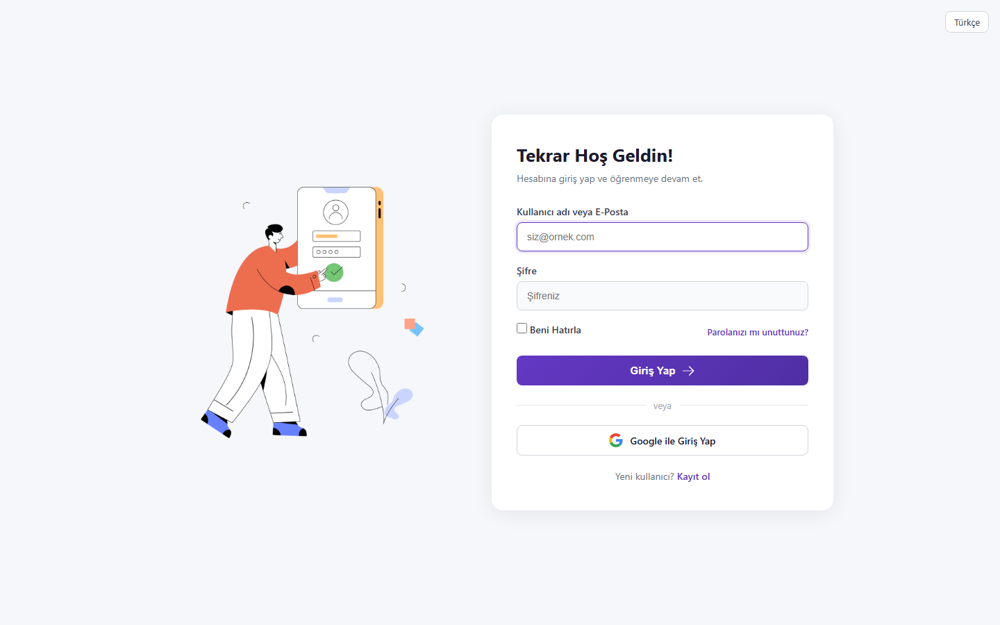
Giriş ekranı.
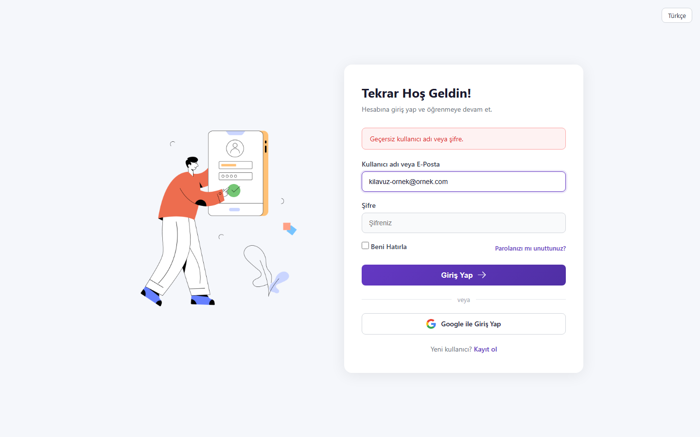
Kullanıcı adı veya şifre yanlışsa formun üstünde uyarı çıkar.
Adım adım
Kullanıcı adı veya E-Posta alanına hesabınızı yazın.
Şifre alanına şifrenizi yazın.
Bu cihazda oturumun açık kalmasını istiyorsanız Beni Hatırla'yı işaretleyin.
Giriş Yap'a tıklayın. Google hesabınızla girmek için Google ile Giriş Yap'ı kullanın.
Alanlar ve butonlar
Alan / Buton
Açıklama
Kullanıcı adı veya E-Posta
Kayıtta verdiğiniz e-posta ya da kullanıcı adı.
Şifre
Hesap şifresi.
Beni Hatırla
Oturumu tarayıcı kapansa da açık tutar. Ortak bilgisayarda işaretlemeyin.
Google hesabıyla giriş. İlk girişte rol seçimi ve profil tamamlama adımları gelir.
Yeni kullanıcı? Kayıt ol
Hesap oluşturma formunu açar.
Türkçe (sağ üst)
Giriş ekranının dilini değiştirir.
Uyarı ve hata mesajları
Geçersiz kullanıcı adı veya şifre.: kullanıcı adı ya da şifre yanlış.
Giriş başarısız! Lütfen bilgilerinizi kontrol edin.: giriş isteği sunucuda reddedildi.
Admin hesabınızın şifresini sıfırladıysa ilk girişte yeni bir şifre belirlemeniz istenir.
2.3 Hesap oluşturma (kayıt)
Menü: Kayıt Ol · Adres: /app/register
Amacı: E-posta ve şifreyle yeni hesap açmak. Rol (Öğrenci, Öğretmen, Veli) bu formda seçilir; okul, sınıf gibi role özel bilgiler girişten sonra kayıt sihirbazında tamamlanır.
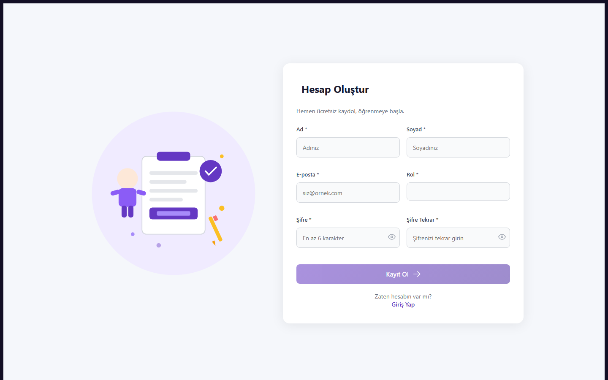
Hesap Oluştur formu.
Adım adım
Giriş ekranında Kayıt ol'a ya da karşılama sayfasında Kayıt Ol'a tıklayın.
Ad, Soyad ve E-posta alanlarını doldurun.
Rol listesinden Öğrenci, Öğretmen veya Veli seçin.
Şifre (en az 6 karakter) ve Şifre Tekrar alanlarını doldurun.
Kayıt Ol'a tıklayın. Başarılı olursa giriş ekranına dönülür; yeni hesabınızla giriş yapın.
İlk girişte kayıt sihirbazı açılır ve role özel bilgileri ister (bkz. 2.4).
Alanlar ve butonlar
Alan / Buton
Açıklama
Ad *, Soyad *
Zorunlu, en az 2 karakter.
E-posta *
Zorunlu, geçerli e-posta biçiminde olmalı. Giriş için kullanılır.
Rol *
Öğrenci, Öğretmen veya Veli. Admin rolü kayıtla alınamaz.
Şifre *, Şifre Tekrar *
En az 6 karakter; iki alan aynı olmalı. Göz simgesi şifreyi gösterir/gizler.
Zaten hesabın var mı? Giriş Yap
Giriş ekranına döner.
Uyarı ve hata mesajları
Ad zorunludur. / Soyad zorunludur. / En az 2 karakter olmalıdır.: ad veya soyad boş ya da çok kısa.
E-posta zorunludur. / Geçerli bir e-posta giriniz.: e-posta boş ya da hatalı.
Rol seçimi zorunludur.: rol seçilmedi.
Şifre zorunludur. / En az 6 karakter olmalıdır. / Şifreler eşleşmiyor.: şifre kuralları.
Kayıt talebiniz alındı. Hesabınız oluşturulduysa giriş yapabilirsiniz.: kayıt isteği alındı.
Kayıt başarısız! Lütfen bilgilerinizi kontrol edin.: sunucu kaydı reddetti (ör. e-posta kullanımda).
2.4 Kayıt sihirbazı: role özel bilgiler
Menü: yok (ilk girişte otomatik) · Adres: /register, /register?role=student|teacher|parent
Amacı: Hesabın rolünü kesinleştirmek ve role özel bilgileri almak. İki adımı vardır: 1 · Rol Seçimi ve 2 · Bilgiler. Rol kayıt formundan, kayıt bağlantısından (?role=) ya da hesaptaki rolden biliniyorsa 1. adım atlanır.
Ekran görüntüsü alınamadı
Not: 1. adım (Rol Seçimi: Nasıl devam etmek istersiniz?) yalnızca rolü hiç belli olmayan hesapta görünür. Yerelde böyle bir test hesabı olmadığı için bu adımın görüntüsü alınamadı.
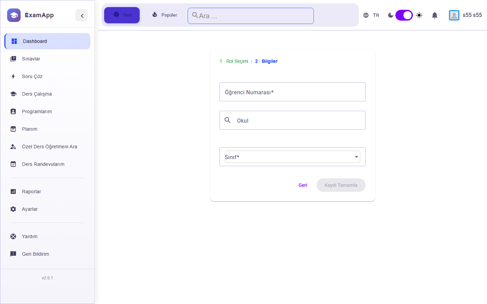
Öğrenci: Öğrenci Numarası, Okul (isteğe bağlı) ve Sınıf.
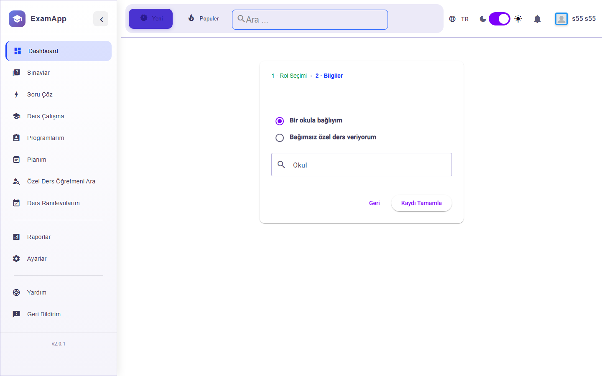
Öğretmen: çalışma şekli (okula bağlı / bağımsız) ve Okul.
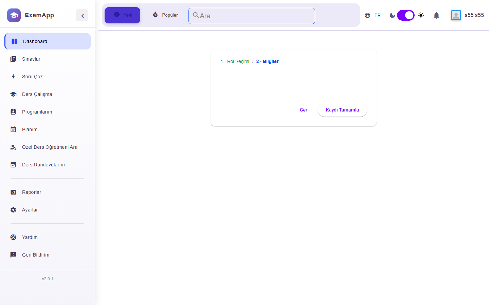
Veli: ek bilgi istenmez; Kaydı Tamamla ile hesap veli olarak tamamlanır.
Adım adım
(Gerekirse) 1. adımda rolünüzü seçip Devam et'e tıklayın.
Öğrenci: Öğrenci Numarası ve Sınıf'ı girin; okulunuzu listeden seçebilirsiniz.
Öğretmen: Bir okula bağlıyım ise okulunuzu listeden seçin; Bağımsız özel ders veriyorum ise okul seçmeyin.
Veli: bilgilendirme metnini okuyun.
Kaydı Tamamla'ya tıklayın. Öğrenci ve öğretmen Sınavlar sayfasına, veli Dashboard'a yönlenir. Onay bekleyen öğretmen Başvuru durumu sayfasını görür.
Alanlar ve butonlar
Alan / Buton
Açıklama
Öğrenci Numarası
Öğrenci için zorunlu.
Sınıf
Öğrenci için zorunlu. Sorular ve günün soruları bu sınıfa göre gelir.
Okul
Yazarak arayın ve listeden seçin; serbest metin kaydedilmez. Öğrencide okul kayda kilitlenir, sonra yalnızca admin değiştirir. Öğretmende okul bağlantısı admin onayıyla etkinleşir.
Çalışma şekliniz
Bir okula bağlıyım / Bağımsız özel ders veriyorum. Bağımsız öğretmen hesabı admin onayından sonra açılır.
Geri
Önceki adıma döner.
Kaydı Tamamla
Bilgileri kaydeder; zorunlu alanlar dolana kadar pasiftir.
Uyarı ve hata mesajları
Sınıf seçimi zorunludur.: öğrenci sınıf seçmedi.
Listeden bir okul seçin; serbest metin kaydedilmez. / Yazdığınız okulu listeden seçin, alanı temizleyin ya da "Bağımsız özel ders veriyorum" seçeneğini işaretleyin.: okul alanına listede olmayan metin yazıldı.
Okul listesi yüklenemedi.: okul listesi alınamadı; Tekrar dene'ye tıklayın.
Kayıt tamamlandı!: kayıt başarılı.
Öğretmen kaydınız alındı; hesabınız yönetici onayı bekliyor.: öğretmen hesabı admin onayına düştü.
Okul bağlantınız yönetici onayı bekliyor: seçilen okul bağlantısı admin onayından sonra etkinleşir; o zamana kadar okulun öğrencileri ve sınıfları görünmez.
Reddedilen okul talebinizden sonra bekleme süresi henüz dolmadı.: reddedilen okul talebinden sonra yeni talep için beklemek gerekir; kalan süre mesajda yazar.
Kayıt başarısız! Lütfen tekrar deneyin.: sunucu hatası.
Amacı: Şifresini unutan kullanıcının e-postayla yeni şifre belirlemesi. Uygulama içinde ayrı bir şifre değiştirme ekranı yoktur. Admin de bir kullanıcının şifresini sıfırlayabilir (bkz. Admin bölümü).
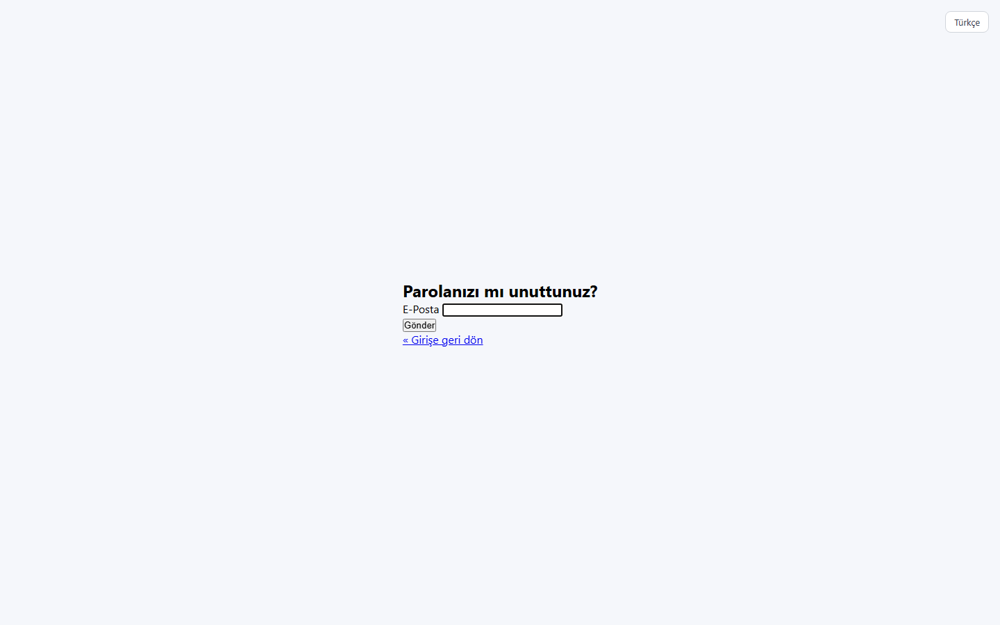
Parolanızı mı unuttunuz? ekranı.
Adım adım
Giriş ekranında Parolanızı mı unuttunuz?'a tıklayın.
E-Posta alanına hesabınızın e-postasını yazıp Gönder'e tıklayın.
Gelen e-postadaki bağlantıyla yeni şifrenizi belirleyin.
« Girişe geri dön ile giriş ekranına dönün ve yeni şifreyle giriş yapın.
Yerel ortamda bu ekran tema stilleri olmadan, düz form olarak açılıyor (görüntüdeki gibi).
Admin şifrenizi sıfırladıysa size geçici bir şifre iletilir; ilk girişte yeni şifre belirlemeniz istenir ve açık oturumlarınız kapanır.
2.6 Üst çubuk, profil menüsü ve çıkış
Menü: her sayfada üstte · Adres: tüm sayfalar
Amacı: Dil, tema, bildirimler ve hesap menüsüne her sayfadan erişmek. Soldaki menü rolünüze göre değişir; menüdeki öğeler rol bölümlerinde anlatılır.
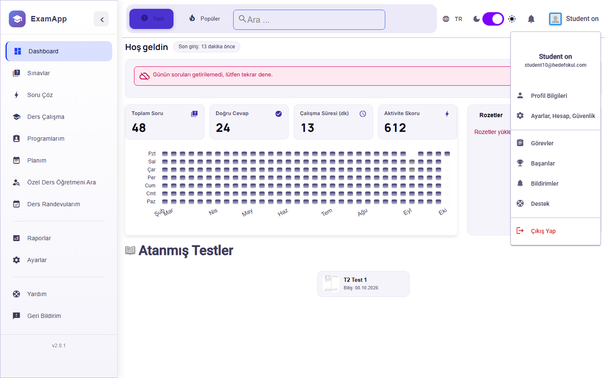
Sağ üstteki ada tıklanınca açılan profil menüsü.
Adım adım
Sol menüyü daraltmak/genişletmek için logonun yanındaki ok butonunu kullanın.
Sağ üstte adınıza tıklayarak profil menüsünü açın.
Menüde görünür; profil ve tema ayarları için sol menüdeki Ayarlar'ı kullanın.
Profil menüsündeki Profil Bilgileri, Ayarlar, Görevler, Başarılar ve Destek öğelerine tıklanınca bir şey olmuyor; üst çubuktaki arama da sonuç sayfası açmıyor. Sol menüdeki Yardım ve Geri Bildirim öğeleri karşılama sayfasına düşüyor.
2.7 Dil ve tema
Menü: üst çubuk ▸ TR ve ay/güneş anahtarı · Adres: tüm sayfalar
Amacı: Arayüz dilini (Türkçe / English) ve renk temasını (açık / koyu) seçmek. Seçimler tarayıcıda saklanır; dil tercihi hesabınıza da kaydedilir.
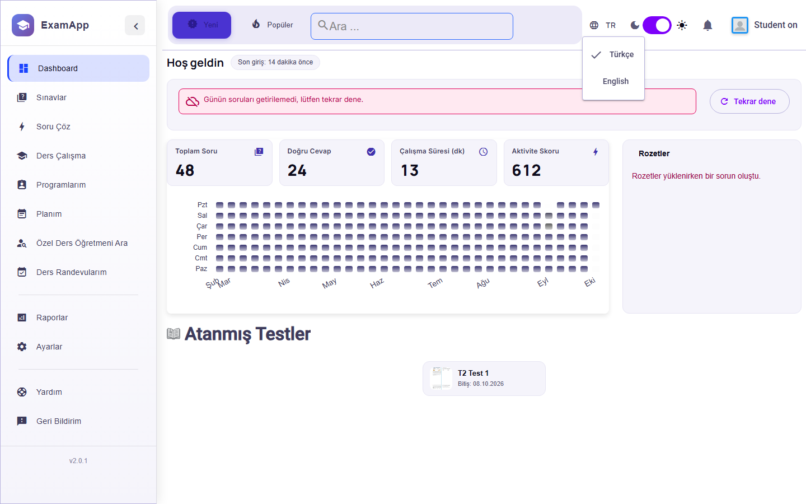
TR'ye tıklanınca açılan dil listesi.
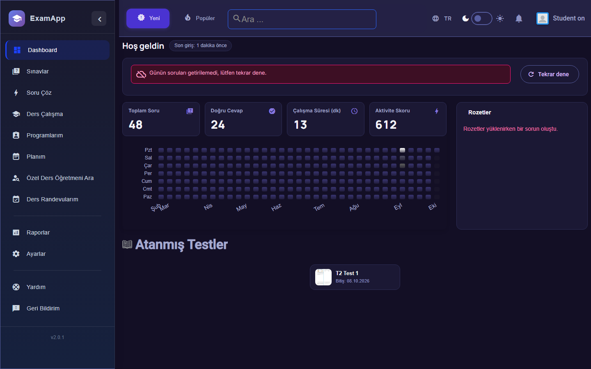
Koyu tema.
Adım adım
Dili değiştirmek için üst çubukta TR'ye tıklayın ve Türkçe ya da English'i seçin. Sayfa hemen o dile geçer.
Temayı değiştirmek için ay/güneş anahtarına tıklayın (Koyu temaya geç / Açık temaya geç).
Öğrenciler kart görünümünü ayrıca Ayarlar ▸ Tema Ayarları'ndan kişiselleştirebilir (bkz. Öğrenci ▸ Ayarlar).
Amacı: Kazanılan rozetleri, hatırlatmaları, randevu kararlarını, yeni yorumları ve öğretmen başvurusu gibi güncellemeleri listelemek. Yeni bildirim ayrıca ekranın köşesinde kısa bir uyarı olarak görünür.
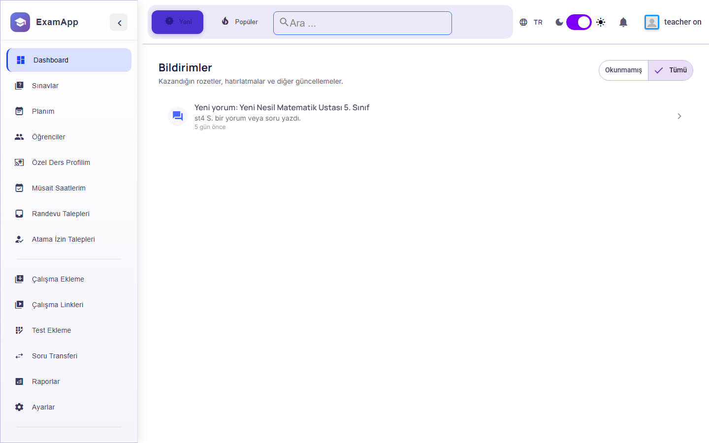
Bildirimler sayfası (öğretmen hesabında yeni yorum bildirimi).
Adım adım
Üst çubuktaki zile tıklayın.
Sağ üstte Okunmamış veya Tümü filtresini seçin.
Bir bildirime tıklayarak ilgili sayfaya gidin (ör. yorumun olduğu test, randevularım, başvurular).
Alanlar ve butonlar
Alan / Buton
Açıklama
Okunmamış / Tümü
Listeyi filtreler.
Bildirim satırı
Başlık, kısa metin ve ne zaman geldiği. Aynı konudaki birden çok bildirim tek satırda birleştirilebilir.
Okunmamış bildirimin yok. / Henüz bir bildirimin yok.: liste boş.
Bildirimlerin yüklenemedi.: liste alınamadı; Tekrar dene'ye tıklayın.
3. Öğrenci
Bu bölüm, Öğrenci rolüyle giriş yapan kullanıcının sol menüde gördüğü tüm ekranları anlatır. Öğrenci; kendisine atanan ve keşfet listesindeki sınavları çözer, rastgele sorularla pratik yapar, çalışma programı oluşturur, takvimini izler, bağımsız (özel ders) öğretmen arayıp randevu talep eder ve onaylı derslere video ile katılır. Ekran görüntüleri yerel test ortamında bir test öğrencisi hesabıyla alınmıştır.
Menünün altındaki Yardım ve Geri Bildirim öğelerinin uygulamada karşılığı olan bir sayfa henüz yok; tıklandığında karşılama sayfasına (/welcome) yönlendirir.
Çalışma sayfaları ve çalışma linkleri öğrencide nerede görünür? Öğrenci bunları ayrı bir menüden açmaz. Öğretmenlerin hazırladığı çalışma sayfaları (görsel, link veya kitap sayfası etkinlikleri), program detayındaki Çalışma Sayfası Ekle düğmesiyle programa eklenir ve takvimde açılır (3.9). Öğretmenlerin konu/alt konu için tanımladığı çalışma linkleri ise tamamlanmış bir sınavın sonuç ekranında, yanlış cevaplanan sorunun altında Bu soruyla ilgili çalışma önerileri başlığıyla listelenir (3.5).
3.1 Dashboard (ana sayfa)
Menü: Dashboard · Adres: /dashboard
Amacı: Girişten sonra açılan özet sayfa. Günün sorularını, son bir yılın çalışma istatistiklerini, rozet durumunu ve öğretmenin atadığı aktif testleri tek yerde gösterir.
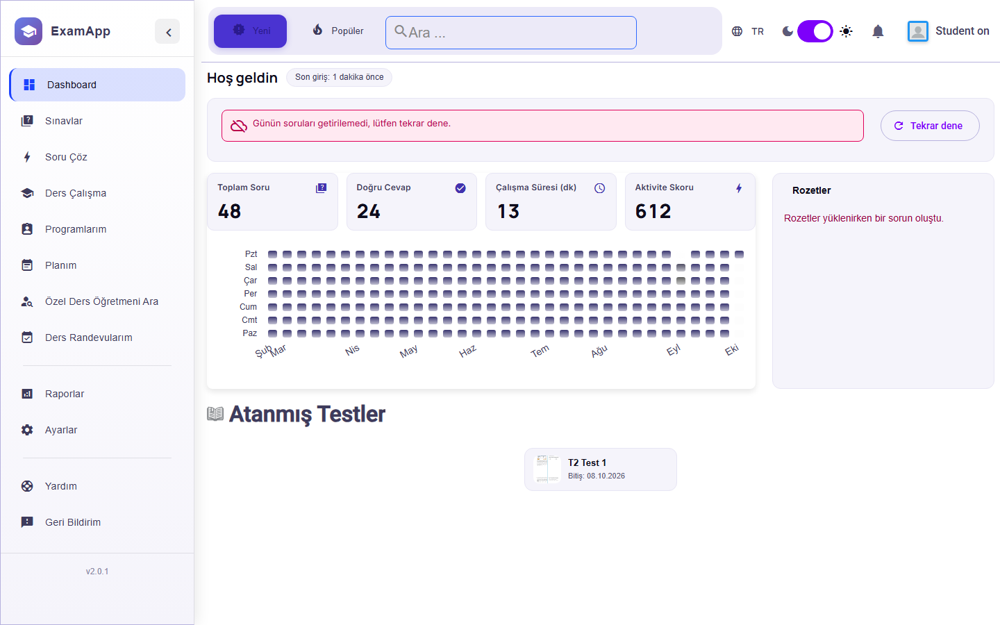
Öğrenci dashboard'u: karşılama satırı, Günün soruları kartı, istatistik kutuları, aktivite ısı haritası, Rozetler ve Atanmış Testler.
Adım adım
Giriş yaptıktan sonra sol menüden Dashboard'a tıklayın. Üstte Hoş geldin ve son giriş zamanınız görünür.
Günün soruları kartında Başla ile size özel günlük seti açın; set yarım kaldıysa Devam et görünür. Set Soru Çöz ekranında açılır.
İstatistik kutularından toplam soru, doğru cevap, çalışma süresi ve aktivite skorunuzu izleyin; ısı haritasında bir güne gelerek o günün soru/doğru/süre değerlerini görün.
Atanmış Testler bölümündeki bir karta tıklayarak sınavın detay sayfasına gidin.
Rozetler kartında kazandığınız ve sıradaki rozetleri takip edin.
Alanlar ve butonlar
Alan / Buton
Açıklama
Günün soruları
Sınıfınıza göre hazırlanan günlük soru seti. Seçim yapmana gerek yok, tek tıkla başla. Seri (Seri: N gün) ve tahmini süre gösterilir. Serbest pratiğe geç Soru Çöz ekranını açar.
Toplam Soru / Doğru Cevap / Çalışma Süresi (dk) / Aktivite Skoru
Son bir yıla ait toplam değerler.
Aktivite ısı haritası
Her kare bir gün; renk koyulaştıkça o gün daha çok çalışılmıştır.
Rozetler
Kazanılan Rozetler ve Sıradaki Rozetler listeleri.
Atanmış Testler
Öğretmenin size atadığı aktif testler; kartta bitiş tarihi (Bitiş: …) yazar.
Uyarı ve hata mesajları
Günün soruları getirilemedi, lütfen tekrar dene. — günlük set alınamadığında; yanında Tekrar dene düğmesi çıkar.
Bugün için soru bulunamadı / Sınıf bilgin doğru mu? Profilinden kontrol edebilirsin. — sınıfınıza uygun soru yoksa; Profilime git ile sınıfınızı kontrol edin.
Bugünkü set tamam — günlük seti bitirdiğinizde; yarın yeni set gelir.
Rozetler yüklenirken bir sorun oluştu. — rozet bilgisi alınamadığında.
Aktif atanmış test bulunmuyor. / Atanmış testler alınırken bir sorun oluştu.
Son bir yıl için aktivite verisi bulunamadı. — hiç çalışma kaydı yoksa.
Yerel ortamda ekran görüntüsü alınırken Günün soruları getirilemedi, lütfen tekrar dene. ve Rozetler yüklenirken bir sorun oluştu. uyarıları sürekli göründü (ilgili servis yanıt vermedi). Görüntüdeki hata kutuları bu nedenledir.
3.2 Sınavlar (Sınav Kütüphanesi)
Menü: Sınavlar · Adres: /tests
Amacı: Size atanan, devam eden ve tamamlanan sınavları görmek, yeni sınav keşfetmek, filtrelemek ve sınava başlamak. Ekranın başlığı Sınav Kütüphanesi, alt başlığı Konu ve zorluğa göre test bul, çöz ve ilerlemeni takip et.
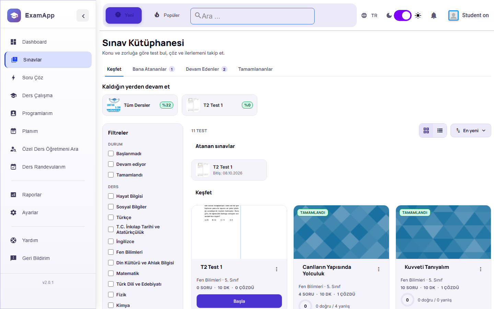
Keşfet sekmesi: Kaldığın yerden devam et şeridi, filtreler, Atanan sınavlar ve Keşfet kartları.
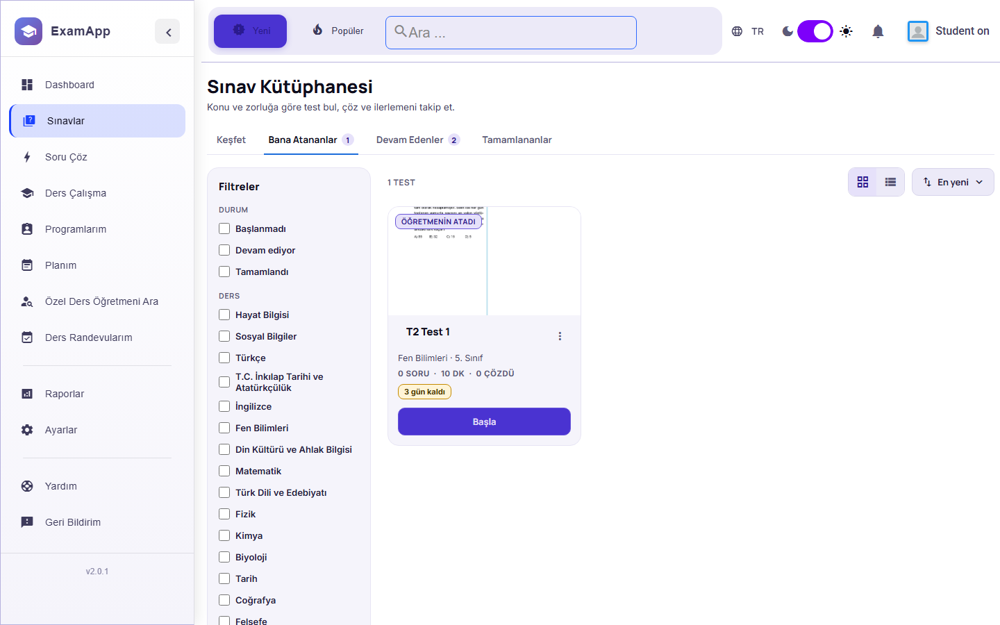
Bana Atananlar: öğretmenin atadığı sınavlar (Öğretmenin atadı etiketi ve kalan gün).
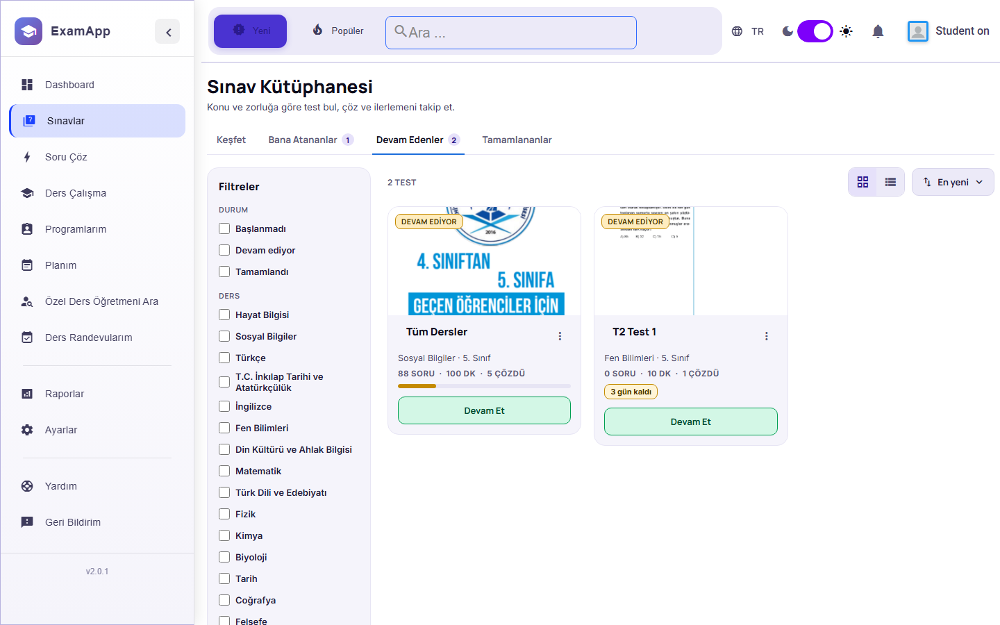
Devam Edenler: yarım kalan sınavlar, ilerleme çubuğu ve Devam Et düğmesi.
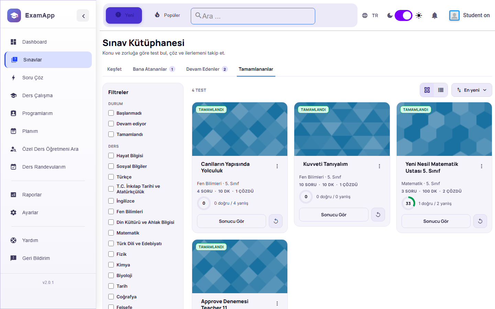
Tamamlananlar: bitirilen sınavlar, doğru/yanlış sayısı, Sonucu Gör ve tekrar çözme düğmesi.
Adım adım
Sol menüden Sınavlar'a tıklayın; ekran Keşfet sekmesiyle açılır.
Üstteki sekmelerden birini seçin: Keşfet, Bana Atananlar, Devam Edenler, Tamamlananlar. Sekme adının yanındaki sayı o sekmedeki sınav adedidir.
Soldaki Filtreler panelinde durum, ders ve sınıf seçerek listeyi daraltın; sağ üstten görünümü (kart/liste) ve sıralamayı (En yeni, Popüler, Süre, Soru sayısı, A–Z) değiştirin.
Bir sınav kartının ana düğmesine basın: yeni sınavda Başla, yarım sınavda Devam Et, bitmiş sınavda Sonucu Gör. Kartın başlığına tıklamak sınavın detay sayfasını açar.
Tamamlanan bir sınavı yeniden çözmek için kartın sağ altındaki yenile (Tekrar çöz) simgesini kullanın.
Alanlar ve butonlar
Alan / Buton
Açıklama
Kaldığın yerden devam et
Yarım kalan sınavlar ve tamamlanma yüzdesi; tıklayınca sınav kaldığı yerden açılır.
Filtreler: Durum
Başlanmadı, Devam ediyor, Tamamlandı.
Filtreler: Ders / Sınıf
Bir veya birden fazla ders ve sınıf seçilebilir. Filtreleri temizle tüm seçimleri kaldırır.
Kart etiketleri
Öğretmenin atadı, Devam ediyor, Tamamlandı, Çalışma testi; teslim durumu için N gün kaldı, Bugün son gün, Süre doldu.
Kart bilgileri
Ders, sınıf, soru sayısı, süre (dk), kaç öğrencinin çözdüğü; tamamlanmışsa N doğru / N yanlış.
Kart menüsü (⋮)
Detayı gör.
Uyarı ve hata mesajları
Testler yüklenirken bir sorun oluştu. — liste alınamazsa; Tekrar dene ile yenileyin.
Atanmış testler yüklenirken bir sorun oluştu.
Sana atanmış aktif bir sınav yok. — Keşfet sekmesinde atanmış sınav yoksa.
Amacı: Sınava başlamadan önce içeriğini (soru sayısı, süre, konu dağılımı, kurallar) görmek, sınavı başlatmak veya ileri bir tarihe planlayıp hatırlatma kurmak.
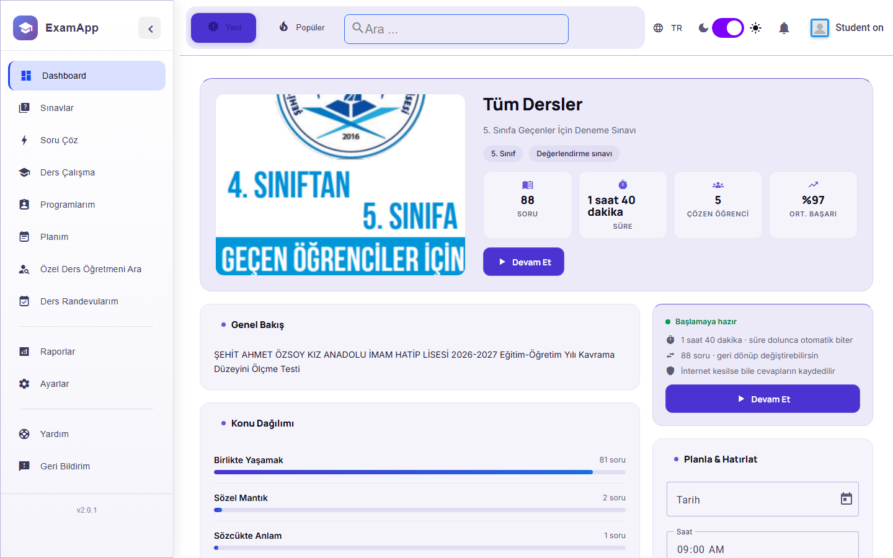
Sınav detayı: üst bilgi kartı (soru, süre, çözen öğrenci, ortalama başarı), Genel Bakış, Konu Dağılımı, Başlamaya hazır kutusu ve Planla & Hatırlat.
Adım adım
Sınav kütüphanesinde bir sınavın başlığına tıklayın.
Genel Bakış ve Konu Dağılımı bölümlerinde sınavın kapsamını inceleyin.
Hemen çözmek için Sınava Başla'ya (yarım bıraktıysanız Devam Et'e) basın; sınav çözme ekranı açılır.
Sonra çözmek için sağdaki Planla & Hatırlat kutusunda Tarih, Saat ve Ne zaman hatırlatılsın alanlarını doldurup Planla'ya basın. Planlanan sınav Planım takviminde görünür.
Kurulu hatırlatıcıyı değiştirmek için Güncelle, kaldırmak için İptal Et düğmesini kullanın.
Alanlar ve butonlar
Alan / Buton
Açıklama
Soru / Süre / Çözen öğrenci / Ort. başarı
Sınavın özet bilgileri.
Başlamaya hazır
Kurallar: süre dolunca otomatik biter, geri dönüp değiştirebilirsin, İnternet kesilse bile cevapların kaydedilir.
Sınava Başla / Devam Et
Sınavı başlatır veya kaldığı yerden açar.
Planla & Hatırlat
Tarih, saat ve hatırlatma zamanı (N saat önce, N dakika önce) seçilir; Planla / Kaydet / Vazgeç.
Denemelerin / Benzer Sınavlar
Daha önceki denemeleriniz (en iyi sonuç, gelişim) ve benzer sınav önerileri (varsa).
Uyarı ve hata mesajları
Lütfen tarih ve saat seçin. — hatırlatıcı için tarih/saat boşsa.
Geçmiş bir tarih seçemezsin.
Hatırlatıcı kuruldu. / Hatırlatıcı kaydedilemedi.
Hatırlatıcı iptal edildi. / Hatırlatıcı iptal edilemedi.
Bu teste erişiminiz yok veya test bulunamadı. — size açık olmayan bir sınav adresi açıldığında.
Sınav detayları getirilemedi.
3.4 Sınav çözme
Menü: Sınavlar → Başla / Devam Et · Adres: /testsolve/{oturumNo}
Amacı: Sınav sorularını süre içinde cevaplamak. Cevaplar anında kaydedilir; sınav yarıda bırakılıp daha sonra devam edilebilir.
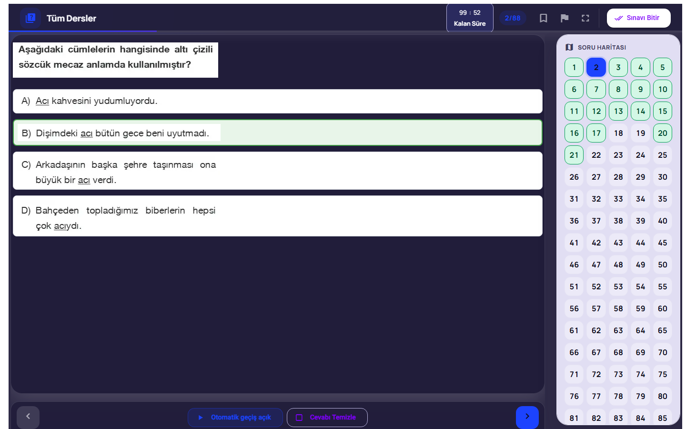
Sınav çözme: üstte kalan süre ve Sınavı Bitir, ortada soru ve şıklar, sağda Soru Haritası, altta gezinme çubuğu.
Adım adım
Soruyu okuyun ve doğru şıkka tıklayın; seçiminiz yeşil işaretlenir.
Sonraki soruya alt çubuktaki ok ile ya da sağdaki Soru Haritası'nda bir numaraya tıklayarak geçin. Cevaplanan sorular haritada renklenir.
İsterseniz Otomatik geçiş aç ile cevap verince bir sonraki soruya otomatik geçilmesini sağlayın.
Emin olmadığınız soruyu üstteki işaret simgesiyle (Soruyu işaretle) işaretleyin; sonra İşaretliye git ile dönün.
Tüm soruları bitirince sağ üstteki Sınavı Bitir'e basın. Süre dolarsa sınav kendiliğinden tamamlanır.
Alanlar ve butonlar
Alan / Buton
Açıklama
Kalan Süre
Sınavın kalan süresi (dakika : saniye).
Cevaplanma oranı
Cevaplanan / toplam soru (ör. 2/88).
İşaretle / Bildir / Tam ekran
Soruyu işaretler, hatalı soruyu bildirir (Soru bildirildi), soruyu tam ekran gösterir.
Soru Haritası
Tüm soru numaraları; cevaplanmış ve işaretli sorular farklı renkte.
Otomatik geçiş açık / kapalı
Cevaplayınca sonraki soruya kendiliğinden geçer.
Cevabı Temizle
Seçili sorunun cevabını siler (Cevap temizlendi).
Sınavı Bitir
Sınavı tamamlar ve sonucu kaydeder.
Uyarı ve hata mesajları
Süre Doldu! — süre bittiğinde; sınav otomatik tamamlanır.
Tüm sorular cevaplanmış — boş soru kalmadığında.
Soru işaretlendi / İşaret kaldırıldı
Sınavı Bitir onay sormadan sınavı kapatır ve öğrenciyi sonuç sayfası yerine Ayarlar (profil) sayfasına götürür. Sonucu görmek için Sınavlar → Tamamlananlar → Sonucu Gör yolunu kullanın.
3.5 Sınav sonucu
Menü: Sınavlar → Tamamlananlar → Sonucu Gör · Adres: /test/{sınavNo}
Amacı: Tamamlanan sınavın başarı yüzdesini, konu bazlı sonucunu ve soru soru cevaplarınızı incelemek; yanlış yaptığınız sorulardan yeni bir test üretmek ve yanlış sorular için çalışma önerilerini açmak.
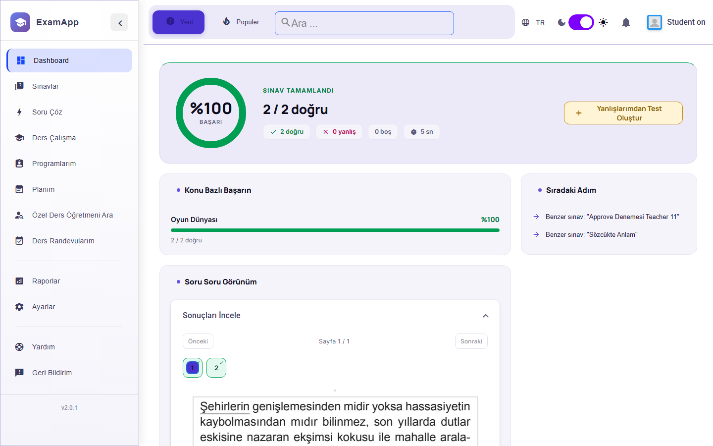
Sonuç görünümü: başarı halkası, doğru/yanlış/boş sayıları, Yanlışlarımdan Test Oluştur, Konu Bazlı Başarın, Sıradaki Adım ve Soru Soru Görünüm.
Adım adım
Sınavlar ekranında Tamamlananlar sekmesine geçin ve sınav kartında Sonucu Gör'e basın.
Üst kartta başarı yüzdenizi ve N / N doğru özetini okuyun.
Konu Bazlı Başarın bölümünde hangi konularda eksik olduğunuzu görün.
Soru Soru Görünüm → Sonuçları İncele panelinde soru numaralarına tıklayarak cevabınızı ve doğru şıkkı karşılaştırın.
Yanlış cevapladığınız bir soruda, altta Bu soruyla ilgili çalışma önerileri listelenir; bir linke tıklayınca içerik yeni sekmede açılır.
Yanlışlarınızı tekrar çözmek için Yanlışlarımdan Test Oluştur'a basın; yeni test oluşturulup açılır.
Alanlar ve butonlar
Alan / Buton
Açıklama
Başarı
Yüzde olarak sınav puanı; yanında doğru, yanlış, boş sayısı ve süre.
Yanlışlarımdan Test Oluştur
Yalnızca yanlış cevaplanan sorulardan kişisel bir test hazırlar.
Konu Bazlı Başarın
Her konu için doğru/toplam ve yüzde.
Sıradaki Adım
Benzer sınav önerileri (Benzer sınav: "…").
Sıralaman / Kazandığın Rozet
Sınıf içindeki sıranız ve eşiği geçtiyseniz kazandığınız rozet (varsa).
Çalışma önerileri
Öğretmenlerin soru konusuna tanımladığı video/doküman linkleri; yeni sekmede açılır.
Yorumlar ve sorular
Soru veya sınav hakkında öğretmene yorum/soru yazma alanı (sınavda yorumlar açıksa).
Uyarı ve hata mesajları
Soru dökümü yükleniyor... — cevaplar yüklenirken.
Test oluşturulamadı. — yanlışlardan test üretilemezse.
Çalışma önerileri şu anda yüklenemedi.
3.6 Soru Çöz (pratik)
Menü: Soru Çöz · Adres: /practice
Amacı: Süre baskısı olmadan rastgele sorularla pratik yapmak. Her cevaptan sonra sonuç anında gösterilir. Başlık: Soru Çöz, alt başlık: Kapsamını seç, rastgele sorularla pratik yap; her cevaptan sonra sonucu anında gör.
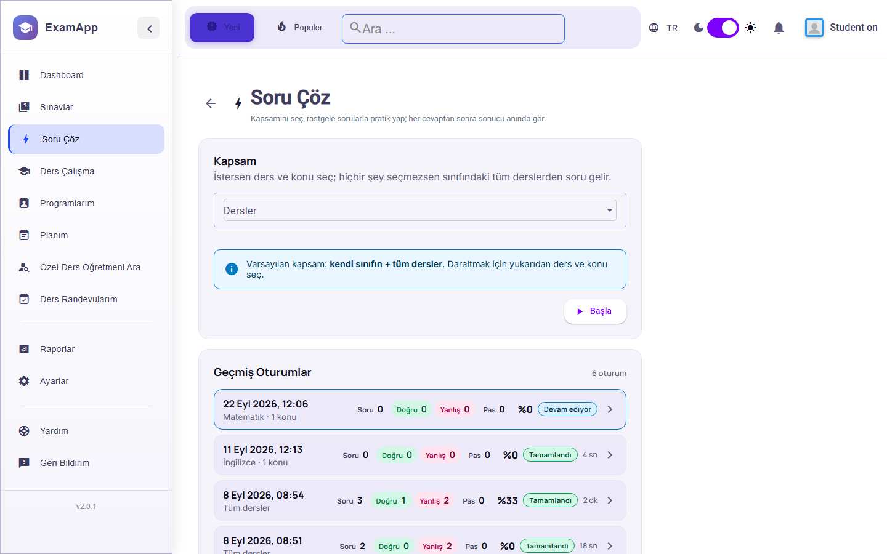
Kapsam seçimi ve Geçmiş Oturumlar listesi.
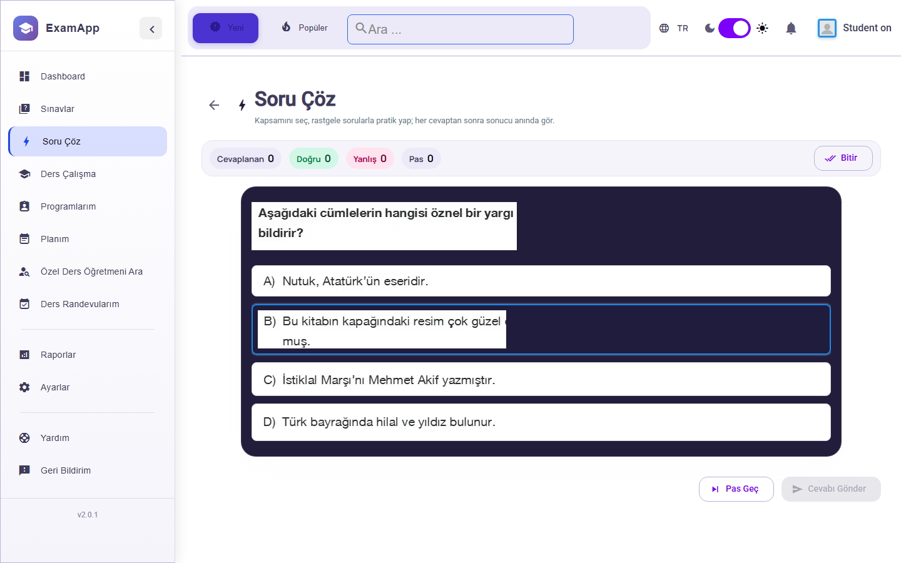
Pratik oturumu: üstte sayaçlar (Cevaplanan, Doğru, Yanlış, Pas) ve Bitir, altta Pas Geç ve Cevabı Gönder.
Adım adım
Sol menüden Soru Çöz'e tıklayın.
Kapsam bölümünde isterseniz Dersler listesinden ders, ardından Konular (isteğe bağlı) listesinden konu seçin. Hiçbir şey seçmezseniz sınıfınızdaki tüm derslerden soru gelir.
Başla'ya basın; ilk soru açılır.
Bir şık seçip Cevabı Gönder'e basın. Sonuç hemen gösterilir; doğru şık işaretlenir. Sonraki Soru ile devam edin. Bilmediğiniz soruyu Pas Geç ile atlayın.
Bitirmek için sağ üstteki Bitir'e basın. Özet ekranından Yeni Oturum, Oturumu İncele veya Panele dön seçeneklerinden birini seçin.
Önceki bir oturumu açmak için Geçmiş Oturumlar listesindeki satıra tıklayın; devam eden oturuma döner veya biten oturumu soru soru incelersiniz.
Alanlar ve butonlar
Alan / Buton
Açıklama
Dersler / Konular (isteğe bağlı)
Pratiğin kapsamı. Seçilenler etiket olarak görünür ve tek tek kaldırılabilir.
Varsayılan kapsam
kendi sınıfın + tüm dersler.
Geçmiş Oturumlar
Tarih, kapsam, soru/doğru/yanlış/pas sayısı, başarı yüzdesi, süre ve durum (Devam ediyor / Tamamlandı).
Cevabı Gönder / Pas Geç / Sonraki Soru
Soruyu cevaplar, atlar veya sonraki soruya geçer.
Bitir
Oturumu sonlandırır ve özeti gösterir.
Uyarı ve hata mesajları
Doğru cevap! Harika gidiyorsun. / Yanlış cevap. Doğru şık aşağıda gösteriliyor. / Soru pas geçildi. Doğru şık aşağıda gösteriliyor.
Pratik yapabilmek için sınıf bilginin tanımlı olması gerekir. — profilde sınıf yoksa; Profilime git.
Seçtiğin kapsamda soru bulunamadı — Kapsamı Değiştir ile başka ders/konu seçin.
Bu kapsamdaki soruların hepsini çözdün
Dersler yüklenemedi. / Geçmiş oturumlar yüklenemedi. / İşlem tamamlanamadı. Lütfen tekrar deneyin.
Günün soruları modunda: Günün soruları günde bir kez çözülür. İstersen serbest pratikle devam edebilirsin.
3.7 Ders Çalışma
Menü: Ders Çalışma · Adres: /study
Amacı: Dersleri, konuları ve alt konuları gezerek video ve doküman içeriklerine ulaşmak, içerikleri tamamlandı olarak işaretlemek ve not almak.
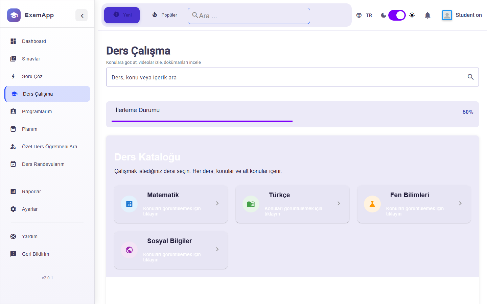
Ders Kataloğu: arama kutusu, İlerleme Durumu ve ders kartları.
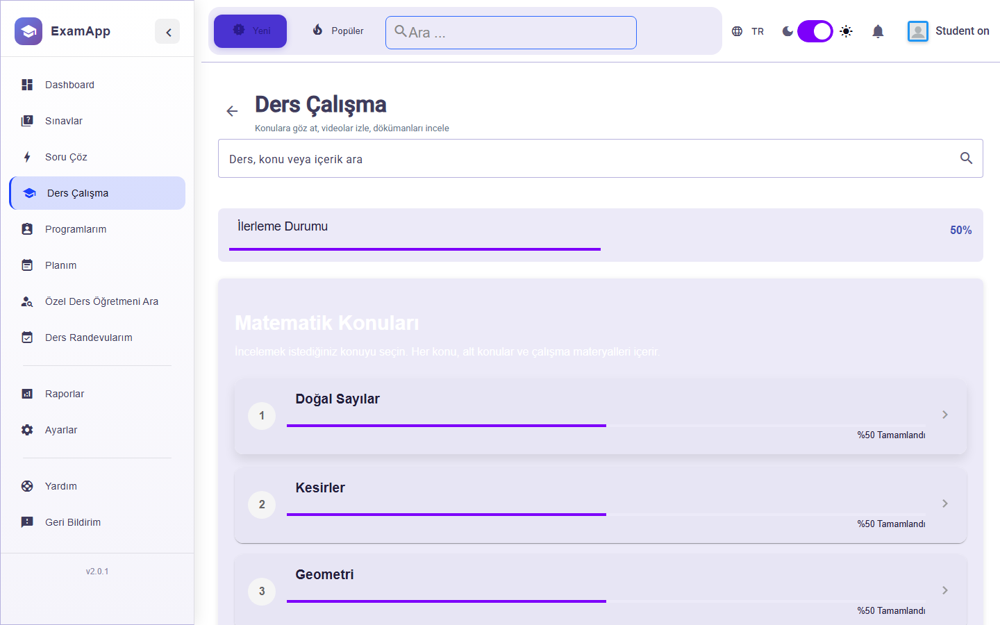
Bir ders seçildiğinde konular ve her konunun tamamlanma yüzdesi.
Adım adım
Sol menüden Ders Çalışma'ya tıklayın.
Ders kartlarından birine (ör. Matematik) tıklayın; o dersin konuları listelenir.
Bir konuya, sonra bir alt konuya tıklayın; alt konudaki video ve dokümanlar görünür.
İçeriği açın; video izleyin veya Dokümanı Görüntüle ile dokümanı açın.
Bitirdiğinizde Tamamlandı Olarak İşaretle'ye basın. Alttaki Notlarım sekmesine kendi notunuzu, Yorumlar sekmesine yorum yazabilirsiniz.
Geri dönmek için başlığın solundaki ok simgesini kullanın.
Alanlar ve butonlar
Alan / Buton
Açıklama
Ders, konu veya içerik ara
Katalogda arama yapar.
İlerleme Durumu
Tamamlanan içeriklerin yüzdesi.
Konu kartı
Konu adı ve %N Tamamlandı.
Favorilere Ekle / Paylaş / Linki Kopyala
İçerik sayfasındaki işlemler (Link kopyalandı!).
Tamamlandı Olarak İşaretle
İçeriği ilerlemenize ekler.
Yorumlar / Notlarım
İçerikle ilgili yorum ve kişisel notlar.
Uyarı ve hata mesajları
Henüz hiç ders bulunamadı.
Bu ders için henüz konu eklenmemiş. / Bu konu için henüz alt konu eklenmemiş.
Bu alt konu için henüz içerik eklenmemiş. / İçerik bulunamadı.
Henüz hiç yorum yok. İlk yorumu siz yapın!
Bu ekran şu an sunucuya bağlı değil: dersler, konular, ilerleme yüzdesi, yorum ve notlar uygulama içindeki örnek (sabit) verilerden geliyor ve kaydedilmiyor. Ayrıca açık temada Ders Kataloğu başlığı ve kart açıklamaları zemin rengine çok yakın olduğu için zor okunuyor.
3.8 Programlarım
Menü: Programlarım · Adres: /programs
Amacı: Kişisel çalışma programlarınızı listelemek, ilerlemelerini izlemek ve yeni program oluşturmak.
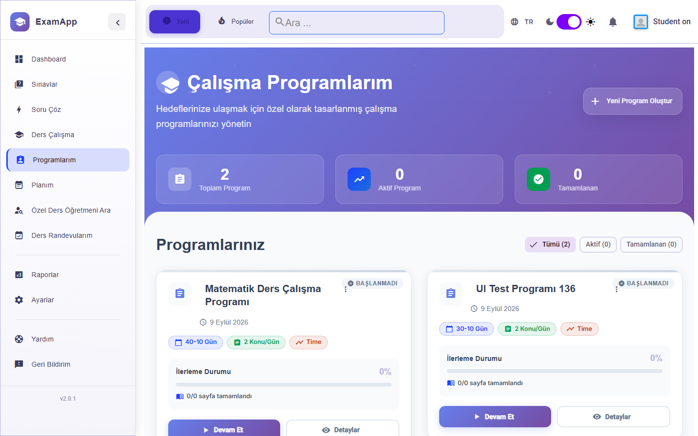
Çalışma Programlarım: üstte toplam/aktif/tamamlanan sayıları, altta program kartları.
Bir programa devam etmek için Devam Et, ayrıntıları görmek için Detaylar'a basın.
Kart menüsünden (⋮) programı düzenleyin, silin veya yeniden başlatın (Tekrar Başla).
Yeni program için sağ üstteki Yeni Program Oluştur'a basın.
Alanlar ve butonlar
Alan / Buton
Açıklama
Toplam Program / Aktif Program / Tamamlanan
Program sayıları.
Program kartı
Ad, başlangıç tarihi, süre (N gün), günlük konu (N konu/gün), tür, durum (Başlanmadı, Devam Ediyor, Tamamlandı) ve İlerleme Durumu (N/N sayfa tamamlandı).
Düzenle / Sil / Tekrar Başla
Kart menüsündeki işlemler.
Uyarı ve hata mesajları
Henüz bir çalışma programınız yok — İlk Programımı Oluştur ile başlayın.
Programlar yüklenemedi — Tekrar Dene.
Silerken: "…" programını silmek istediğinize emin misiniz? Bu işlem geri alınamaz. → Program silindi. / Program silinemedi. Lütfen tekrar deneyin.
Amacı: Programın günlük hedefini ve takvimini görmek, programa öğretmenlerin hazırladığı çalışma sayfalarını (görsel, link, kitap sayfası) eklemek ve açmak.
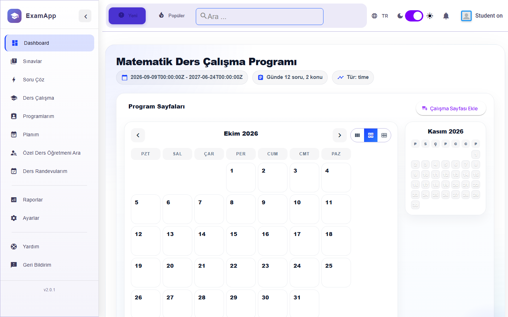
Program detayı: tarih aralığı, Günde N soru, N konu, tür ve Program Sayfaları takvimi.
Adım adım
Programlarım ekranında bir kartın Detaylar düğmesine basın.
Takvimde ayı okla değiştirin; sağ üstteki düğmelerle takvim boyutunu (Küçük, Orta, Büyük) seçin.
Sayfa eklemek için Çalışma Sayfası Ekle'ye basın. Açılan pencerede etkinlik arayın, türe göre (Görsel, Link, Kitap Sayfası) süzün, başlangıç/bitiş tarihi verip kaydedin.
Takvimdeki bir etkinliğe tıklayın; ayrıntı penceresinde Aç ile içeriği yeni sekmede açın.
Alanlar ve butonlar
Alan / Buton
Açıklama
Program Sayfaları
Programa eklenmiş çalışma sayfalarının takvimi.
Çalışma Sayfası Ekle
Öğretmenlerin oluşturduğu çalışma sayfalarından seçim penceresi.
Takvim boyutu
Küçük / Orta / Büyük görünüm.
Etkinlik ayrıntısı
Çalışma sayfası numarası, etkinlik tipi, kapak ve Aç bağlantısı.
Uyarı ve hata mesajları
En az bir çalışma sayfası seçmelisiniz.
Çalışma sayfaları programa eklendi. / Program güncellenemedi.
Bu etkinliğin bağlantısı geçersiz olduğu için açılamıyor.
Bu sayfa açıkken sol menüde Programlarım yerine Dashboard seçili görünüyor; tarih aralığı da ham biçimde (2026-09-09T00:00:00Z - …) yazıyor.
3.10 Yeni program oluşturma (sihirbaz)
Menü: Programlarım → Yeni Program Oluştur · Adres: /program-create
Amacı: Birkaç soruyu cevaplayarak size uygun bir çalışma programı oluşturmak.
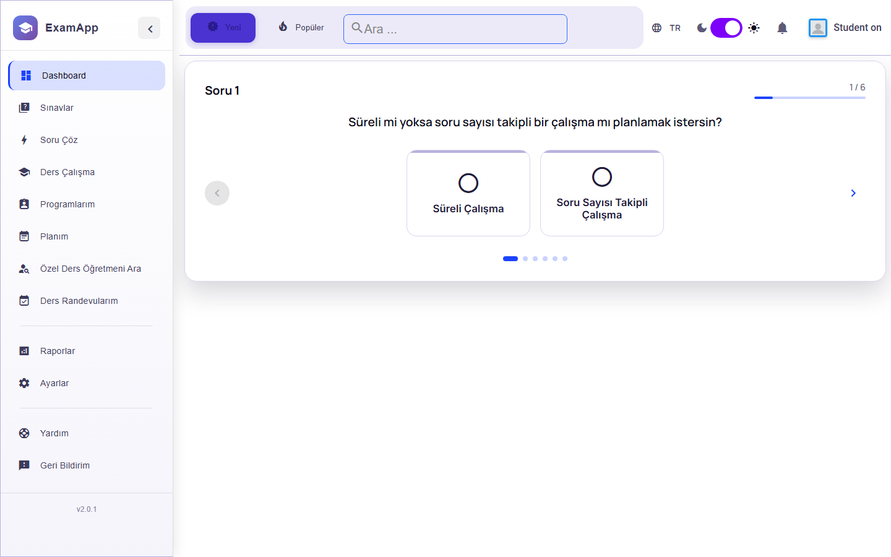
Sihirbazın ilk sorusu: Süreli Çalışma veya Soru Sayısı Takipli Çalışma; sağ üstte adım sayacı (1 / 6).
Adım adım
Programlarım ekranında Yeni Program Oluştur'a basın.
Her soruda bir seçeneğe tıklayın; sağdaki ok (Sonraki soru) ile ilerleyin, soldaki ok ile geri dönün.
Son adımda seçimleriniz Seçimleriniz: başlığıyla özetlenir.
Programınızı Oluşturun formunda Program Adı, isteğe bağlı Açıklama, Başlangıç Tarihi ve Bitiş Tarihi'ni girin.
Programı Oluştur'a basın. Değiştirmek için Geri Dön.
Alanlar ve butonlar
Alan / Buton
Açıklama
Soru N / adım sayacı
Sihirbazdaki konumunuz.
Program Adı
Zorunlu (ör. Örn: Matematik Çalışma Programım).
Açıklama (İsteğe bağlı)
Kısa açıklama.
Başlangıç Tarihi / Bitiş Tarihi
Zorunlu; bitiş başlangıçtan sonra olmalı.
Uyarı ve hata mesajları
Program adı gereklidir, Başlangıç tarihi gereklidir, Bitiş tarihi gereklidir
Bitiş tarihi, başlangıç tarihinden sonra olmalıdır
Bir seçim yapmadınız — bir soruyu boş geçtiğinizde özet satırında.
Program başarıyla oluşturuldu! / Program oluşturulurken bir hata oluştu
Sorular yüklenemedi, lütfen tekrar deneyin. / Program adımları bulunamadı.
Bu sayfa açıkken sol menüde Dashboard seçili görünüyor.
3.11 Planım (takvim)
Menü: Planım · Adres: /my-calendar
Amacı:Planladığın sınavları, atama teslim tarihlerini, çalışma planlarını ve ders randevularını tek takvimde gör.
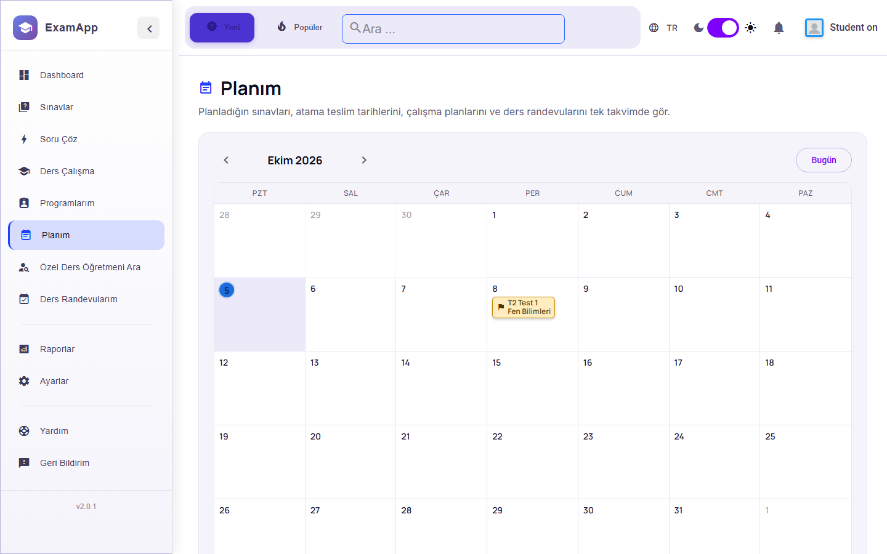
Aylık takvim; bugünün tarihi işaretli, teslim tarihi olan bir atama gün hücresinde görünüyor.
Adım adım
Sol menüden Planım'a tıklayın.
Ay adının yanındaki oklarla önceki/sonraki aya geçin; Bugün ile bu aya dönün.
Bir gündeki etkinliğe tıklayın; gün penceresi açılır.
Penceredeki düğmeyle işleme gidin: Çözmeye başla, Sonucu gör, Hatırlatıcıyı düzenle, Programa git veya Randevularıma git.
Alanlar ve butonlar
Alan / Buton
Açıklama
Etkinlik türleri
Hatırlatma, Teslim tarihi, Tamamlanan atama, Çalışma planı, Tamamlanan plan, Ders randevusu (renkleriyle ayrılır).
+N daha
Bir günde sığmayan etkinlik sayısı; tıklayınca hepsi listelenir.
Gün penceresi
Etkinliğin saati, dersi, son tarihi (Son tarih: …) ve durumu (Tamamlandı, Onaylı randevu).
Uyarı ve hata mesajları
Bu ay planlanmış sınav, atama veya randevu yok — Sınavlara git düğmesiyle sınav seçin.
Takvim yüklenemedi — Tekrar dene.
3.12 Özel Ders Öğretmeni Ara
Menü: Özel Ders Öğretmeni Ara · Adres: /tutors
Amacı:Branşa, ücrete ve ders şekline göre onaylı bağımsız öğretmenleri listeleyin.
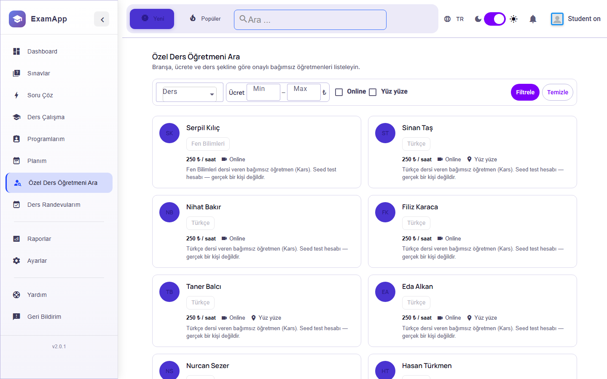
Arama filtreleri (Ders, Ücret Min–Max, Online, Yüz yüze) ve öğretmen kartları. Kartlardaki öğretmenler test (seed) verisidir.
Adım adım
Sol menüden Özel Ders Öğretmeni Ara'ya tıklayın.
Ders listesinden branş seçin, isterseniz Ücret için Min ve Max girin, Online ve/veya Yüz yüze kutularını işaretleyin.
Filtrele'ye basın; filtreleri sıfırlamak için Temizle.
Bir öğretmen kartına tıklayarak profilini açın.
Alanlar ve butonlar
Alan / Buton
Açıklama
Ders
Branş filtresi (Tümü varsayılan).
Ücret (Min / Max)
Saatlik ücret aralığı (₺).
Online / Yüz yüze
Ders şekli filtresi.
Öğretmen kartı
Ad, verdiği dersler, saatlik ücret (N ₺ / saat veya Ücret belirtilmemiş), ders şekli ve kısa tanıtım.
Uyarı ve hata mesajları
Bu filtrelere uygun öğretmen bulunamadı
Öğretmenler aranırken bir sorun oluştu. — Tekrar dene.
Ders listesi yüklenemedi.
3.13 Öğretmen profili
Menü: Özel Ders Öğretmeni Ara → öğretmen kartı · Adres: /tutors/{öğretmenNo}
Amacı: Bağımsız öğretmenin verdiği dersleri, ücretini, ders şeklini ve tanıtımını görmek ve randevu almak.
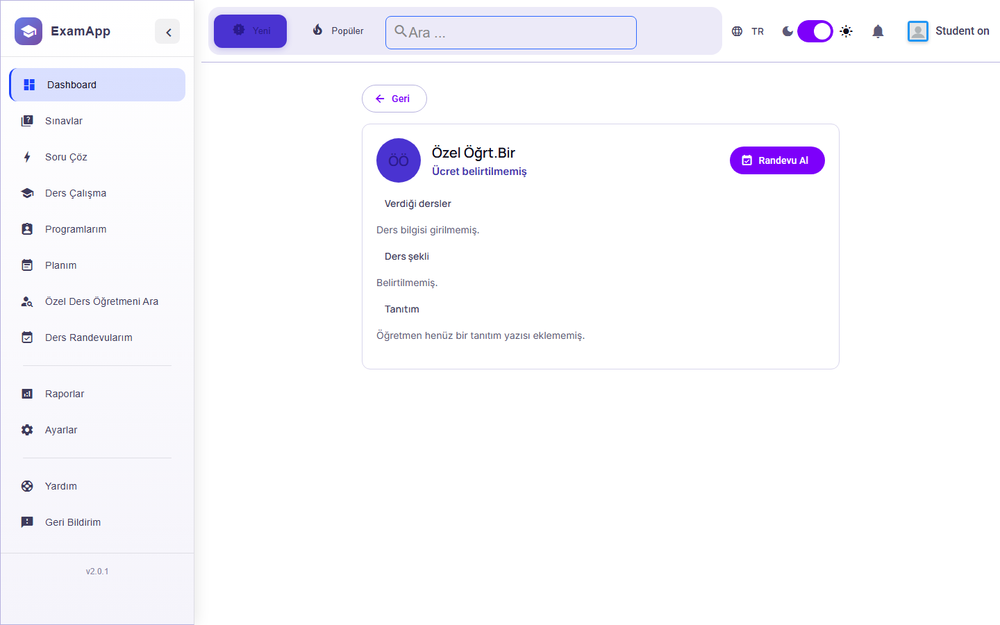
Öğretmen profili: ad, ücret, Verdiği dersler, Ders şekli, Tanıtım ve Randevu Al düğmesi. Örnek profil boş alanları gösteriyor.
Adım adım
Arama sonuçlarında bir öğretmen kartına tıklayın.
Profil bilgilerini inceleyin.
Randevu almak için Randevu Al'a basın (bkz. 3.14). Listeye dönmek için Geri.
Alanlar ve butonlar
Alan / Buton
Açıklama
Ücret
N ₺ / saat veya Ücret belirtilmemiş.
Verdiği dersler / Ders şekli / Tanıtım
Öğretmenin özel ders profilinden gelir; boşsa Ders bilgisi girilmemiş., Belirtilmemiş., Öğretmen henüz bir tanıtım yazısı eklememiş. yazar.
Randevu Al
Müsait saat seçme penceresini açar.
Uyarı ve hata mesajları
Öğretmen bulunamadı.
Öğretmen profili yüklenirken bir sorun oluştu. — Tekrar dene.
3.14 Randevu alma
Menü: Öğretmen profili → Randevu Al · Adres: /tutors/{öğretmenNo} (pencere)
Amacı: Öğretmenin tanımladığı müsait saatlerden birini seçip ders randevusu talep etmek. Talep, öğretmen onaylayana kadar Onay bekliyor durumunda kalır.
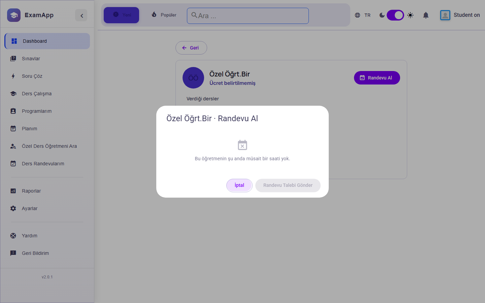
… · Randevu Al penceresi. Yerel ortamda bu öğretmenin müsait saati olmadığı için boş durum mesajı görünüyor.
Adım adım
Öğretmen profilinde Randevu Al'a basın.
Pencerede listelenen müsait saatlerden birini seçin.
Randevu Talebi Gönder'e basın. Vazgeçmek için İptal.
Gönderimden sonra çıkan bildirimdeki Randevularım bağlantısıyla talebinizi takip edin.
Alanlar ve butonlar
Alan / Buton
Açıklama
Müsait saat seçimi
Öğretmenin boş zaman aralıkları; gece yarısını aşan aralıklarda (+1 gün) yazar.
Randevu Talebi Gönder
Seçilen saat için talep oluşturur; saat seçilmeden pasiftir.
Bu zaman aralığı için zaten bir randevu var. — seçilen saat başkası tarafından alınmışsa.
3.15 Ders Randevularım
Menü: Ders Randevularım · Adres: /my-bookings
Amacı:Öğretmenlerden talep ettiğin özel ders randevuları ve durumları. Onaylanan derse buradan katılınır.
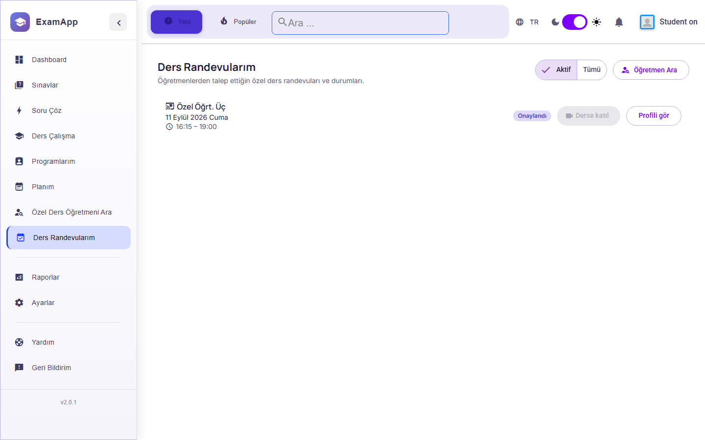
Randevu satırı: öğretmen, tarih ve saat, durum (Onaylandı), Derse katıl ve Profili gör.
Adım adım
Sol menüden Ders Randevularım'a tıklayın.
Sağ üstte Aktif (yaklaşan) veya Tümü filtresini seçin.
Durumu izleyin: Onay bekliyor, Onaylandı veya Reddedildi (reddedilenlerde Ret gerekçesi: … yazar).
Onaylı bir dersin saati geldiğinde Derse katıl'a basın; video ders odası açılır (bkz. 3.16).
Yeni öğretmen bulmak için Öğretmen Ara.
Alanlar ve butonlar
Alan / Buton
Açıklama
Aktif / Tümü
Randevu filtresi.
Derse katıl
Yalnızca onaylı randevularda ve ders saatine yakın aktif olur; erken ise Ders başlamadan N dk önce aktif olur, geçmişse Ders süresi doldu ipucu gösterilir.
Profili gör
Öğretmenin profilini açar.
Uyarı ve hata mesajları
Henüz bir ders randevun yok. — Öğretmen ara.
Randevuların yüklenemedi. — Tekrar dene.
3.16 Video ders ve ortak tahta
Menü: Ders Randevularım → Derse katıl · Adres: /lessons/{randevuNo}/video
Amacı: Onaylı özel derse öğretmenle görüntülü katılmak ve Tahta sekmesinde ortak çizim tahtasını kullanmak.
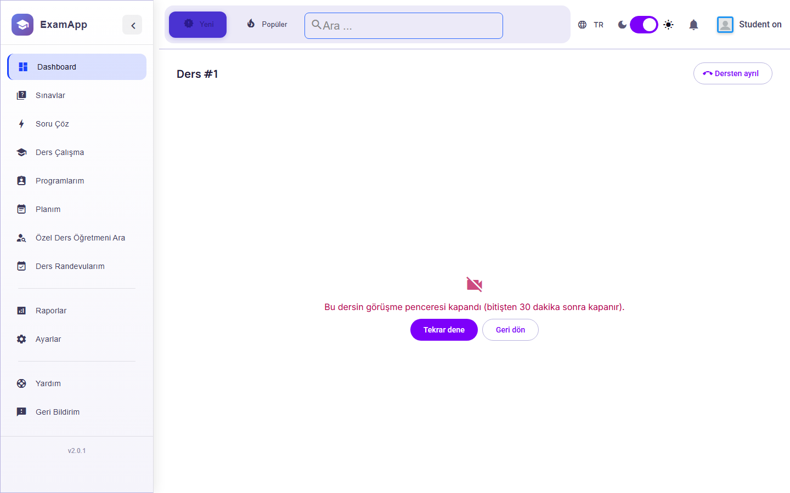
Ders saati geçmiş bir randevu: Bu dersin görüşme penceresi kapandı (bitişten 30 dakika sonra kapanır). mesajı, Tekrar dene ve Geri dön.
Ekran görüntüsü alınamadı
Not: Etkin görüşme odası ve Tahta sekmesi, yalnızca ders saatine yakın (katılma penceresi açıkken) görünür. Ekran görüntüsü alınırken katılma penceresi açık olan onaylı bir randevu yoktu.
Adım adım
Ders Randevularım ekranında onaylı dersin Derse katıl düğmesine basın.
Görüşme odası hazırlanıyor... mesajından sonra tarayıcının kamera/mikrofon iznini verin.
Video sekmesinde öğretmenle görüşün; öğretmen Moderatör (öğretmen), siz Katılımcı olarak görünürsünüz.
Tahta sekmesine geçerek ortak çizim tahtasında çizin; bağlantı durumu (Bağlı, Bağlanıyor...) ve karşı tarafın çevrimiçi olup olmadığı üstte görünür.
Bitirmek için sağ üstteki Dersten ayrıl'a basın.
Alanlar ve butonlar
Alan / Buton
Açıklama
Ders #N
Randevu numarası.
Video / Tahta
Görüntülü görüşme ve ortak çizim tahtası sekmeleri.
Dersten ayrıl
Odadan çıkar ve randevu listesine döner.
Tahta bağlantıları
Tahtadaki bir dış bağlantı açılmadan önce Dış bağlantı açılsın mı? sorulur.
Öğretmeniniz geçici olarak müsait değil; bu ders şu anda başlatılamıyor.
Tahta: Tahta henüz açılmadı; ders saatine yakın tekrar deneyin., Ders bitiyor: tahta yaklaşık N dakika içinde kapanacak., Ders süresi doldu; tahta salt okunur., Tahtada görsel desteklenmiyor., Tahta yüklenemedi.
3.17 Raporlar (Başarı Rozetleri)
Menü: Raporlar · Adres: /certificates
Amacı:Çalışma alışkanlıklarınıza göre rozetlerin durumunu takip edin. Rozet yolları (adım adım rozetler) ve tekil rozetler burada listelenir.
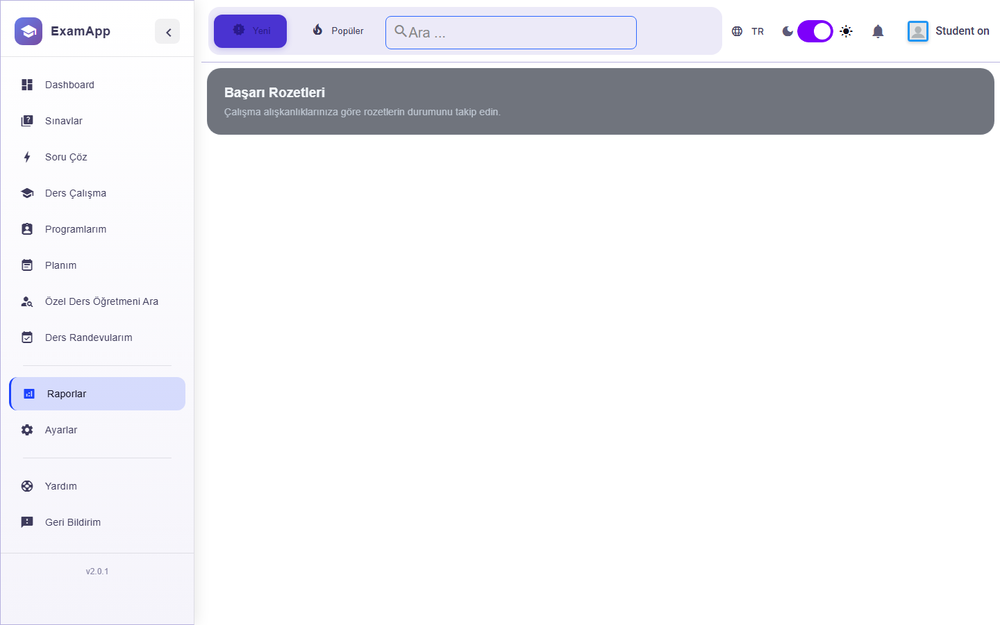
Başarı Rozetleri başlığı. Yerel ortamda rozet listesi gelmedi; yalnızca başlık görünüyor.
Adım adım
Sol menüden Raporlar'a tıklayın.
Her rozet yolunda tamamlanan adım sayısını (N / N tamamlandı) izleyin.
Tekil Rozetler bölümünde tek seferlik rozetleri görün.
Alanlar ve butonlar
Alan / Buton
Açıklama
Rozet yolu
Sıralı rozetler; her adım Adım N olarak gösterilir.
Tekil Rozetler
Bir yola bağlı olmayan rozetler.
Uyarı ve hata mesajları
Rozetler yükleniyor...
Henüz kazanılmış veya takip edilen bir rozet yok.
Rozet bilgisi yüklenemedi. Lütfen daha sonra tekrar deneyin. / Rozet bilgisi bulunamadı.
Yerel ortamda sayfa yalnızca başlık kartını gösterdi; ne rozet listesi ne de bir hata/boş durum mesajı çıktı.
3.18 Ayarlar (profil)
Menü: Ayarlar · Adres: /student-profile (sağ üst profil menüsündeki Ayarlar, Hesap, Güvenlik de buraya gelir)
Amacı: Profil bilgilerinizi ve sınıfınızı güncellemek; puan, rozet ve liderlik sıranızı, ödev/sınav istatistiklerinizi, haftalık çalışma takviminizi görmek ve sınav kartlarının görünüm temasını ayarlamak. Sayfa altı sekmeden oluşur.
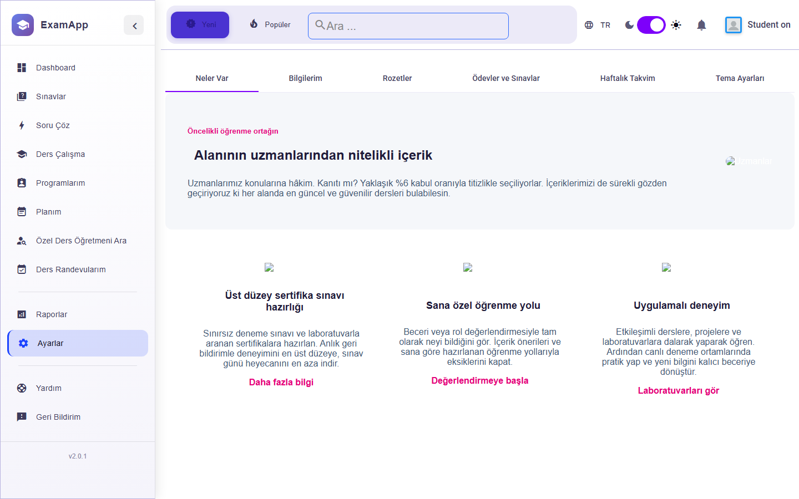
Neler Var sekmesi: platformun öne çıkan özelliklerini tanıtan bilgilendirme kartları.
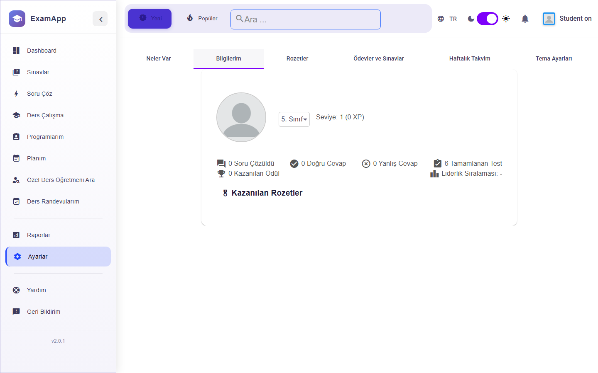
Bilgilerim: profil fotoğrafı, sınıf seçimi, seviye/XP ve çözülen soru, doğru/yanlış, tamamlanan test, ödül, liderlik sırası.
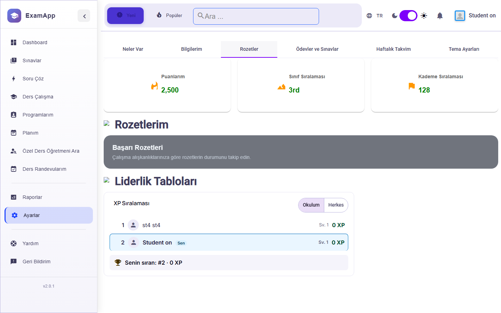
Rozetler: Puanlarım, Sınıf Sıralaması, Kademe Sıralaması, Rozetlerim ve Liderlik Tabloları (XP Sıralaması, Okulum / Herkes).
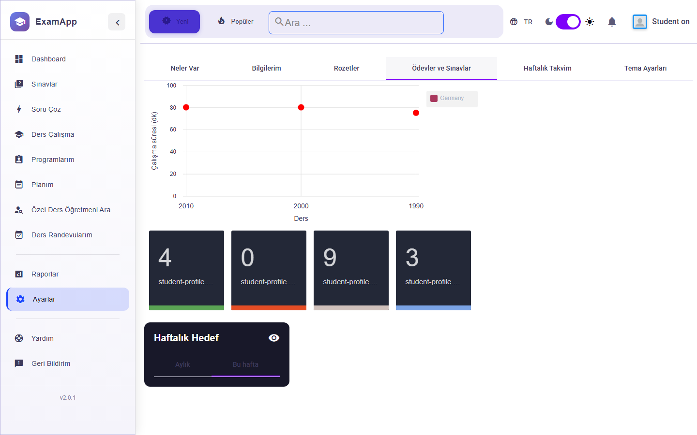
Ödevler ve Sınavlar: ders bazında çalışma süresi grafiği, özet kutuları ve Haftalık Hedef.
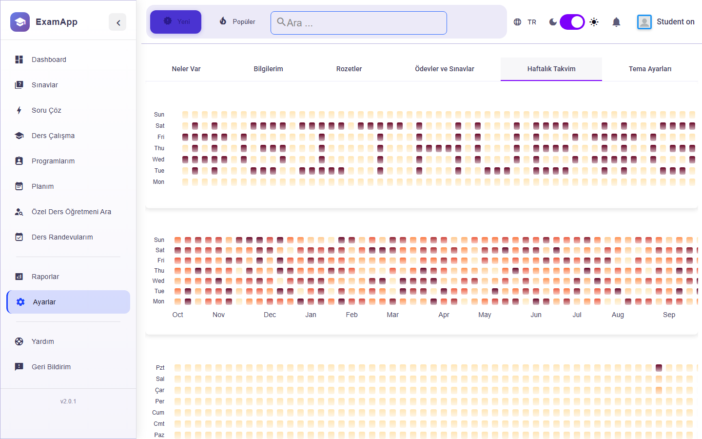
Haftalık Takvim: son bir yılın aktivite ısı haritaları.
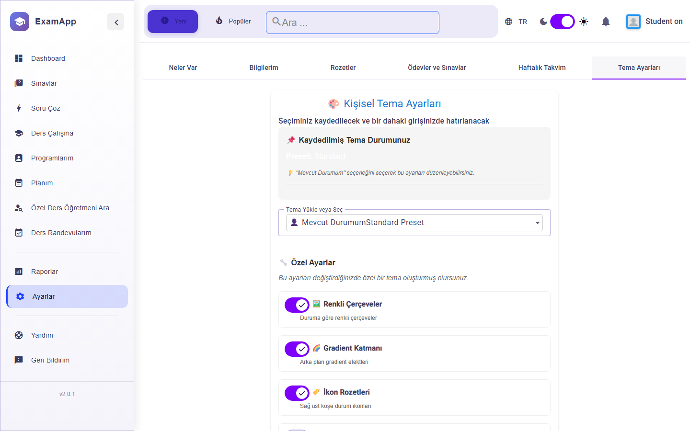
Tema Ayarları: Kişisel Tema Ayarları, kayıtlı tema durumu, hazır tema seçimi ve Özel Ayarlar anahtarları.
Adım adım
Sol menüden Ayarlar'a tıklayın; sayfa Neler Var sekmesiyle açılır.
Bilgilerim sekmesinde sınıfınızı açılır listeden değiştirin; fotoğrafın üzerindeki Değiştir ile avatarınızı güncelleyin.
Rozetler sekmesinde puanınızı, sınıf/kademe sıranızı ve liderlik tablosunu görün; tabloyu Okulum veya Herkes kapsamına çevirin, uzun listede Daha fazla yükle'ye basın.
Ödevler ve Sınavlar ve Haftalık Takvim sekmelerinde çalışma istatistiklerinizi inceleyin; haftalık hedefi Aylık / Bu hafta görünümleri arasında değiştirin.
Tema Ayarları sekmesinde Tema Yükle veya Seç listesinden bir hazır tema (Minimal, Standard, Enhanced, Full) seçin ya da Özel Ayarlar anahtarlarını açıp kapatın.
Önizleme ile deneyin, Kaydet ve Uygula ile kaydedin; Varsayılana Dön ayarları sıfırlar.
Alanlar ve butonlar
Alan / Buton
Açıklama
Sınıf
Kayıtlı sınıfınız; pratik ve günün soruları bu sınıfa göre hazırlanır.
Seviye: N (N XP)
Kazandığınız deneyim puanı ve seviyeniz.
Liderlik Sıralaması
XP'ye göre sıranız; tablonuzda kendi satırınız Sen etiketiyle vurgulanır, altta Senin sıran: #N · N XP yazar.
Haftalık Hedef
Haftalık çalışma hedefi ve En uzun haftalık hedef serisi.
Sıralama yüklenemedi. / Henüz puan yok / Devamı yüklenemedi.
Aktivite verisi alınırken bir hata oluştu. / Son bir yıl için aktivite verisi bulunamadı.
Önizleme uygulandı! Kaydet butonuna basarak kalıcı hale getirebilirsiniz.
Özel tema ayarlarınız kaydedildi ve mevcut durumunuz oldu! / Özel tema kaydedilemedi.
Tema varsayılan ayarlara döndürüldü! / Tema sıfırlanamadı.
Yerel ortamda bazı alanlar tamamlanmamış görünüyor: Neler Var sekmesindeki görseller yüklenmiyor; Ödevler ve Sınavlar sekmesinde grafik ekseni ve özet kutularının başlıkları çeviri anahtarı olarak (student-profile…) görünüyor; Haftalık Takvim ısı haritasında gün adları İngilizce; Rozetler sekmesindeki Rozetlerim kutusu yalnızca başlıktan oluşuyor.
4. Öğretmen
Öğretmen rolü, Keycloak'taki Teacher rolüne sahip ve hesabı yönetici tarafından onaylanmış kullanıcılar içindir. Öğretmen test (sınav) hazırlar, soru ekler, testleri öğrencilerine atar, çalışma içerikleri hazırlar ve (bağımsız öğretmense) özel ders randevularını yönetir. Bu bölümdeki ekran görüntüleri okula bağlı bir test öğretmen hesabıyla alınmıştır; bağımsız öğretmene özgü ekranlar 5. bölümde anlatılır.
Profil menüsü, dil ve tema seçimi ile bildirimler tüm rollerde aynıdır; Ortak bölüme bakın.
4.1 Başvuru durumu (onay bekleyen öğretmen)
Menü: Başvuru durumu · Adres: /teacher-approval-pending
Amacı: Kaydını yeni tamamlamış ya da onayı askıya alınmış öğretmene hesabının durumunu gösterir. Öğretmen hesabı yönetici onaylayana kadar öğretmen özellikleri (sınav oluşturma, çalışma içerikleri, soru transferi, randevular, öğretmen paneli) kapalıdır. Bu sürede menüde yalnızca Başvuru durumu, Özel Ders Profilim, Raporlar ve Ayarlar görünür; Dashboard veya Sınavlar adresine gidilirse bu sayfaya yönlendirilir.
Ekran görüntüsü alınamadı
Not: Yerel ortamda onay bekleyen, reddedilmiş ya da askıya alınmış bir öğretmen test hesabı yok (tüm öğretmen kayıtları onaylı). Ekran, böyle bir hesapla girişte görünür.
Adım adım
Öğretmen olarak kaydolduktan sonra giriş yapın; sistem sizi bu sayfaya getirir.
Karar verilip verilmediğini görmek için Durumu yenile butonuna basın. Karar verildiğinde ayrıca bildirim alırsınız.
Bağımsız özel ders öğretmeni olarak başvurduysanız, onay beklerken Özel ders profilim bağlantısıyla profilinizi hazırlayabilirsiniz.
Hesap onaylandığında Öğretmen paneline git butonu çıkar.
Alanlar ve butonlar
Alan / Buton
Açıklama
Başvurunuz inceleniyor
Onay bekleniyor: Öğretmen kaydınız alındı ve bir yönetici tarafından inceleniyor. Onaylanana kadar sınav oluşturma, çalışma içerikleri, soru transferi, randevular ve öğretmen paneli kapalıdır.
Başvurunuz reddedildi
Reddedildi. Gerekçe: alanında yöneticinin yazdığı neden görünür (yoksa Gerekçe belirtilmedi.). Ne yapabilirsiniz? başlığı altında gerekçeyi incelemeniz ve okul ya da platform yöneticisiyle iletişime geçmeniz önerilir.
Hesabınız onaylandı
Öğretmen hesabınız onaylandı; tüm öğretmen özelliklerini kullanabilirsiniz. — Öğretmen paneline git.
Öğretmen kaydınız bulunamadı
Hesaba bağlı tamamlanmış öğretmen kaydı yok; Öğretmen kaydını tamamla ile kayıt sihirbazına gidilir.
Öğretmen hesabınız askıya alındı
Yönetici onayı askıya aldı; öğretmen özelliklerine erişilemez. Hesap açık kalır, ayarlar gibi sayfalar kullanılabilir.
Başvuru durumunuz alınamadı. — durum okunamadığında; Tekrar dene ile yeniden denenir.
Durum yenilenemedi. Lütfen biraz sonra tekrar deneyin. — Durumu yenile başarısız olduğunda.
Karar verildiğinde bildirim alırsınız; durumu dilediğiniz zaman bu sayfadan yenileyebilirsiniz. — bilgi notu.
4.2 Dashboard (öğretmen paneli ve aktivite)
Menü: Dashboard · Adres: /dashboard
Amacı: Oluşturduğunuz sınavların, atanan öğrencilerin, geride kalan öğrencilerin ve son 7 günün aktivitesinin özetini tek sayfada gösterir.
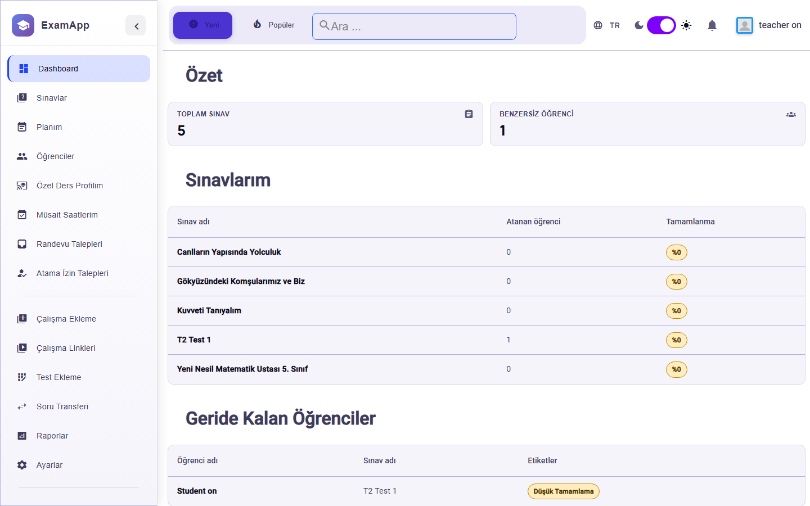
Öğretmen paneli: Özet, Sınavlarım ve Geride Kalan Öğrenciler.
Adım adım
Sol menüden Dashboard'a tıklayın.
Özet kartlarında toplam sınav ve benzersiz öğrenci sayısını görün.
Sınavlarım tablosunda bir satıra tıklayarak sınavın detayına (4.4) gidin.
Geride Kalan Öğrenciler tablosunda etiketlere göre takip edilmesi gereken öğrencileri belirleyin.
Sayfanın altındaki Aktivite Özeti (son 7 gün) ve En Aktif Öğrenciler bölümlerini inceleyin.
Alanlar ve butonlar
Alan / Buton
Açıklama
Toplam Sınav / Benzersiz Öğrenci
Oluşturduğunuz sınav sayısı ve bu sınavlara atanmış farklı öğrenci sayısı.
Sınavlarım (Sınav adı, Atanan öğrenci, Tamamlanma)
Her sınav için atanan öğrenci sayısı ve tamamlanma yüzdesi. Satır, sınav detayını açar.
Geride Kalan Öğrenciler (Öğrenci adı, Sınav adı, Etiketler)
Etiketler: Düşük Tamamlama, Süresi Geçti.
Benim Aktivitem
Son 7 günde açtığınız yeni sınav, yeni atama ve etkin öğrenci sayısı.
Öğrenci Aktivitesi
Öğrencilerinizin çözdüğü soru, doğru sayısı ve toplam süre.
En Aktif Öğrenciler
Çözülen soruya göre sıralı liste (#, Öğrenci, Çözülen Soru, Doğru, Çalışma Süresi).
Uyarı ve hata mesajları
Henüz hiç sınav oluşturmadınız. İlk sınavınızı oluşturduğunuzda özet burada görünecek. — hiç sınavınız yokken.
Geride kalan öğrenci yok, harika gidiyorsunuz! — listede kimse yokken.
Son 7 günde öğrencileriniz henüz soru çözmedi. — en aktif öğrenci listesi boşken.
Özet bilgileri alınırken bir sorun oluştu., Sınav listesi alınırken bir sorun oluştu., Geride kalan öğrenci listesi alınırken bir sorun oluştu., Aktivite bilgileriniz alınırken bir sorun oluştu., Öğrenci aktivitesi alınırken bir sorun oluştu. — ilgili bölüm yüklenemediğinde.
4.3 Sınavlar (Testlerim)
Menü: Sınavlar · Adres: /tests
Amacı: Oluşturduğunuz (ve isterseniz başkalarının paylaştığı) testleri listeler; buradan yeni test açılır, testler düzenlenir, öğrencilere atanır veya silinir.
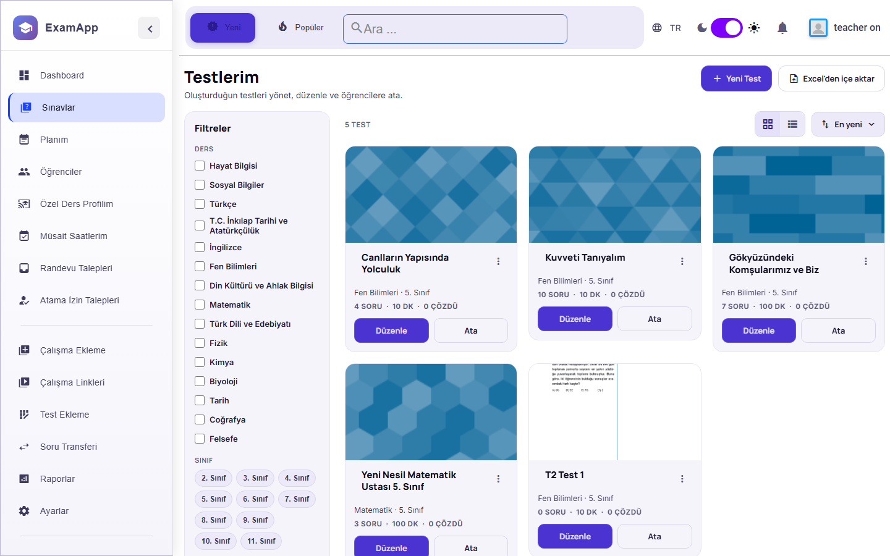
Testlerim: solda filtreler, sağda test kartları.
Adım adım
Sol menüden Sınavlar'a tıklayın.
Soldaki Filtreler panelinden ders, sınıf, süre, soru sayısı, tür veya paylaşım seçin. Başka öğretmenlerin paylaştığı testleri görmek için Başkalarının sınavları filtresini kullanın.
Sağ üstten kart/liste görünümünü ve sıralamayı (En yeni, Popüler, A–Z …) seçin.
Bir kartta Düzenle ile test bilgilerini değiştirin (4.7). Atama yapmak için kartı açıp test detayındaki Sınıfa Ata / Öğrenci Seç butonlarını kullanın (4.5).
Kartın üç nokta menüsünden Detayı gör, Soru Ekle, Kendi hesabıma kopyala (başkasının testi) veya Sil seçeneğini kullanın.
Birden çok kart seçildiğinde alttaki çubukta Öğrencilere Ata, Sil ve Seçimi bırak çıkar (toplu atama henüz açık değildir).
Bu kriterlere uygun test yok. — filtre sonucu boşken.
Testler yüklenirken bir sorun oluştu. — liste yüklenemediğinde (Tekrar dene).
4.4 Test detayı (öğretmen görünümü)
Menü: Sınavlar > kart > Detayı gör (veya Dashboard'da sınav satırı) · Adres: /test/:id
Amacı: Bir testin sınıf ilerlemesini, atamalarını, öğrencilerin zorlandığı soruları ve soru kalitesini gösterir; buradan soru eklenir, test düzenlenir ve atama yapılır. Sayfanın altında testin yorum/soru konuşması yer alır (4.9).
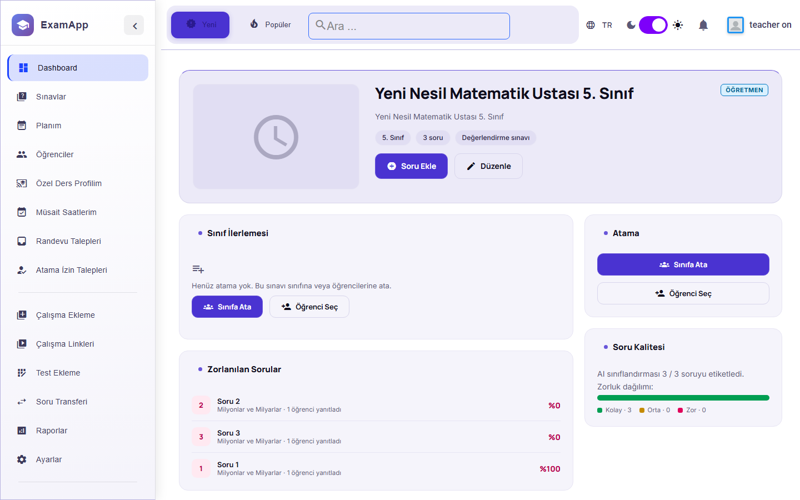
Test detayı, öğretmen görünümü (ÖĞRETMEN etiketi).
Adım adım
Sınavlar ekranında test kartını açın.
Üst kartta Soru Ekle ile soru ekleme tuvaline (4.8), Düzenle ile test düzenleme ekranına gidin.
Atama kartında Sınıfa Ata veya Öğrenci Seç ile atama oluşturun (4.5).
Sınıf İlerlemesi kartında atamadaki öğrencilerin durumunu (Tamamladı, Devam ediyor, Planlandı, Süresi doldu, Başlamadı) izleyin.
Zorlanılan Sorular listesinde en düşük başarılı soruları, Soru Kalitesi kartında yapay zekâ sınıflandırmasının durumunu görün.
Bu teste erişiminiz yok veya test bulunamadı. — yetkisiz/olmayan test.
Sınav detayları getirilemedi. — yükleme hatası.
Atama izni talebiniz gönderildi. / Bu sınav için zaten bekleyen bir talebiniz var. / Talep gönderilemedi. Lütfen tekrar deneyin. — başkasının testi için izin isterken.
Sınav kendi hesabına kopyalandı / Kopyalama başarısız.
4.5 Atama oluşturma (Yeni Atama Oluştur)
Menü: Sınavlar > test > Sınıfa Ata / Öğrenci Seç · Adres: /test/:id (pencere)
Amacı: Testi bir sınıfın tüm öğrencilerine ya da seçilen öğrencilere, başlangıç (ve isteğe bağlı bitiş) zamanıyla atar. Atanan test öğrencinin Bana Atananlar sekmesinde ve takviminde görünür.
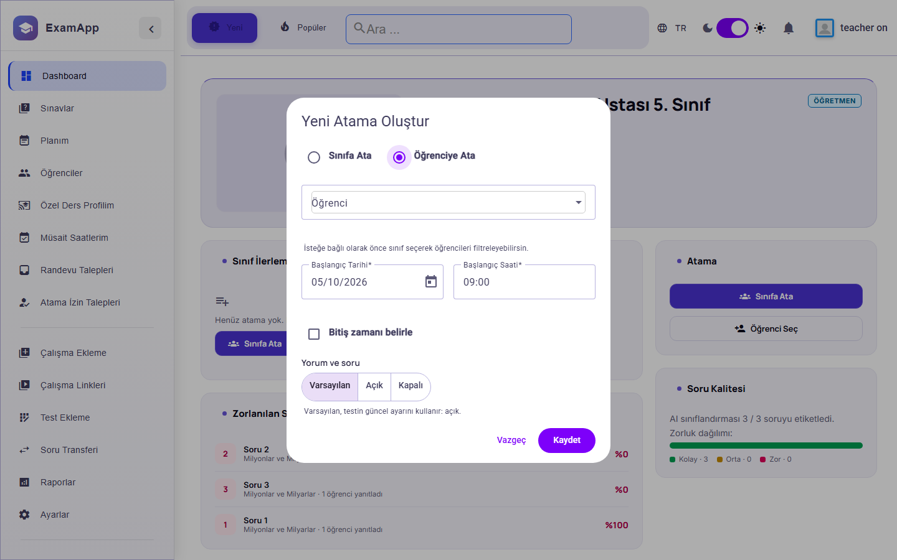
Yeni Atama Oluştur penceresi (Öğrenciye Ata seçili).
Adım adım
Test detayında Sınıfa Ata veya Öğrenci Seç'e basın.
Pencerede Sınıfa Ata (seçilen sınıftaki tüm öğrenciler) ya da Öğrenciye Ata seçin.
Sınıf veya öğrenci(ler)i seçin. Öğrenci listesini önce sınıf seçerek daraltabilirsiniz.
Başlangıç Tarihi ve Başlangıç Saati'ni girin. Son tarih gerekiyorsa Bitiş zamanı belirle'yi işaretleyip bitiş tarih/saatini girin.
Yorum ve soru ayarını seçin: Varsayılan (testin ayarı), Açık veya Kapalı.
Kaydet'e basın; vazgeçmek için Vazgeç.
Alanlar ve butonlar
Alan / Buton
Açıklama
Sınıfa Ata / Öğrenciye Ata
Atama kapsamı. Bağımsız öğretmen sınıf bazlı atama yapamaz.
Sınıf seçimi zorunlu, Öğrenci seçimi zorunlu, Tarih zorunlu, Geçerli bir saat gir — eksik/hatalı alan.
Atanabilecek öğrenci bulunamadı. — listede öğrenci yokken.
Bağımsız öğretmen olarak sınıf bazlı atama yapamazsın; yalnızca randevusu olan öğrencilerini seçerek atayabilirsin. ve Henüz onaylı dersi olan öğrencin yok; randevu onaylanınca burada görünür. — bağımsız öğretmen.
Öğrenci listesi yüklenemedi. Sayfayı yenileyip tekrar dene.
Atama oluşturuldu. / Atama oluşturulamadı. / Atama oluşturulurken bir hata oluştu. — kaydetme sonucu.
4.6 Yeni Test Oluştur
Menü: Test Ekleme (veya Sınavlar > Yeni Test) · Adres: /exam
Amacı: Yeni bir testin künyesini ve sınıflandırmasını girerek testi oluşturur; sağdaki panelden bir Excel dosyasıyla birden çok testi tek seferde oluşturur. Test oluşturulduktan sonra soru ekleme adımına geçilir.
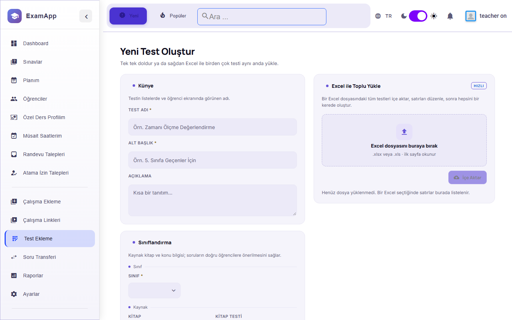
Yeni Test Oluştur: solda form, sağda Excel ile Toplu Yükle.
Adım adım
Menüden Test Ekleme'ye tıklayın.
Künye bölümünde Test Adı, Alt Başlık ve isteğe bağlı Açıklama girin.
Sınıflandırma bölümünde Sınıf'ı seçin; Kaynak adımında Kitap ve Kitap Testi'ni seçin ya da Yeni kitap ekle / Yeni kitap testi ekle ile yenisini yazın; Konu adımında Ders, Konu ve Alt Konu seçin.
Ayarlar'da süreyi (dakika), Çalışma testi ve Yorum ve soru anahtarlarını ayarlayın.
Oluştur ve devam et'e basın. Test oluşturulur ve soru ekleme adımına geçilir.
Toplu yükleme için sağdaki alana .xlsx/.xls dosyasını bırakın, İçe Aktar'a basın, satırları kontrol edip N Testi Oluştur'a basın.
Alanlar ve butonlar
Alan / Buton
Açıklama
Test Adı*, Alt Başlık*, Açıklama
Testin listelerde ve öğrenci ekranında görünen adı ve tanıtımı.
Sınıf*, Kitap, Kitap Testi, Ders, Konu, Alt Konu
Kaynak kitap ve konu bilgisi; soruların doğru öğrencilere önerilmesini sağlar. Hepsine uygula seçimi tüm sorulara uygular.
Süre (dakika)
Testin çözüm süresi.
Çalışma testi
Açıkken puana ve sıralamaya sayılmaz, öğrenci istediği kadar çözer.
Yorum ve soru
Açıkken öğrenciler test ve sorular hakkında yorum yazabilir.
Excel ile Toplu Yükle (HIZLI)
Excel'in ilk sayfası okunur; tablo sütunları Kitap, Test Adı, Sınıf, Süre, Durum. Seçili satırı geri al, Tümünü geri al, Listeyi temizle.
Uyarı ve hata mesajları
Form eksik veya hatalı! — zorunlu alanlar boşken.
Önce sınıf seçin. — ders seçmeden önce.
Alt konu seçilmedi — alt konu gerekirken.
Test oluşturuldu., Soru ekleme adımına geçiliyor... — başarı.
Test oluşturulamadı., Bir hata oluştu, tekrar deneyin. — hata.
Excel dosyası okunamadı., Bazı testler oluşturulamadı. Başarılı: {{success}}, Hatalı: {{failed}}, Tüm testler oluşturuldu., Toplu yükleme sırasında bir hata oluştu. — toplu yükleme.
Henüz dosya yüklenmedi. Bir Excel seçtiğinde satırlar burada listelenir. — toplu yükleme paneli boşken.
4.7 Testi Düzenle (görünürlük ve paylaşım)
Menü: Sınavlar > Düzenle (veya test detayı > Düzenle) · Adres: /exam/:id
Amacı: Var olan testin künye ve sınıflandırma bilgilerini, kapak görselini ve görünürlük/paylaşım ayarlarını günceller. Sağdaki Kart Önizleme testin listede nasıl görüneceğini gösterir.
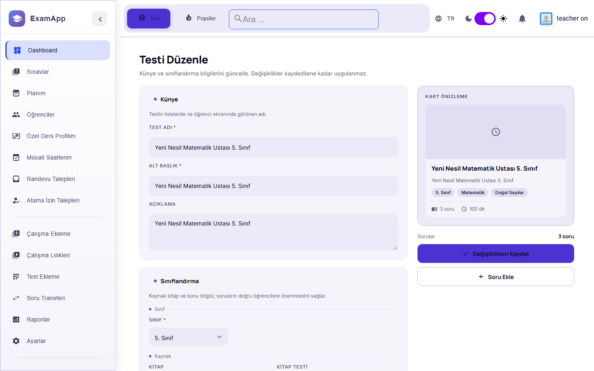
Testi Düzenle ekranı ve kart önizlemesi.
Adım adım
Sınavlar ekranında kartta Düzenle'ye basın.
Künye ve sınıflandırma alanlarını değiştirin (alanlar 4.6 ile aynıdır).
Gerekirse Kapak Görseli alanına görsel sürükleyin ya da Dosya Seç ile yükleyin (PNG, JPG, WEBP; önerilen 1200×675, en fazla 2 MB).
Görünürlük bölümünde Öğretmenler Arası Paylaşım ve Öğrenciye Görünürlük seçeneklerini belirleyin; bu değişiklik anında kaydedilir.
Değişiklikleri Kaydet'e basın. Soru eklemek için Soru Ekle'ye geçin.
Alanlar ve butonlar
Alan / Buton
Açıklama
Öğretmenler Arası Paylaşım
Özel: yalnızca siz ve admin görür/düzenler/atar. Herkese Açık (Görüntüleme): tüm öğretmenler görür, atamak için sizden onay gerekir. Herkese Açık (Atanabilir): tüm öğretmenler görür ve onaysız atayabilir. Sadece okulum: yalnızca okulunuzdaki öğretmenler görür ve atar.
Öğrenciye Görünürlük
Restricted: yalnızca atanan öğrenciler görür ve başlatabilir. Normal: öğrenci keşfet listesinde görünür ve başlatabilir.
Kart Önizleme, Sorular
Kartın görünümü ve testteki soru sayısı.
Değişiklikleri Kaydet / Soru Ekle
Formu kaydeder / soru ekleme tuvalini açar.
Uyarı ve hata mesajları
Bu testi yalnızca oluşturan öğretmen veya yönetici düzenleyebilir. Salt görüntüleme modundasınız. — başkasının testini açtığınızda.
Amacı: Taranmış kitap sayfalarından soru oluşturur. Sayfa görselleri yüklenir, Otomatik Algıla ile sayfadaki sorular, şıklar ve pasajlar otomatik tespit edilir; bölgeler düzeltilip bir teste kaydedilir.
Üst çubukta Kitap seç, Kitap testi ve Test seç ile soruların kaydedileceği testi seçin (listede yoksa Yeni test oluştur).
Sayfaları yükleyin: tuvale Taranmış sayfaları buraya sürükleyin, Dosya Seç'e basın ya da Klasör Yükle ile bir klasör seçin (klasör adından kitap adı otomatik doldurulur). İçe Aktar önceden hazırlanmış bölgeleri yükler.
Otomatik Algıla'ya basın; sistem sayfadaki soru, şık ve pasaj bölgelerini tespit eder (soru tespiti).
Gerekirse çizim modunu (Soru, Şık, Pasaj, Sürükle-Bırak) seçip bölgeleri elle çizin veya düzeltin; Hizala ile bölgeleri hizalayın.
Tuvalde bir soruyu seçin; sağdaki Soru Müfettişi'nde etkileşim tipini, şıkları, doğru cevabı, sınıflandırmayı (Yapay Zekâ ile önerilebilir), zorluğu ve uyarıları kontrol edin.
Kaydet'e basın. Açılır menüde Kaydet ve Düzelt, Çalışma Sayfasına Gönder ve Sadece modeli eğit seçenekleri vardır.
Soruları listelemek için test seçiliyken Ön İzleme'yi açın: testteki sorular Ön İzleme — Test adı başlığıyla soru, örnek ve pasaj sayısıyla listelenir (/questioncanvas/preview/:testId). Testin soru sayısı ve öğrenci performansı ayrıca test detayında (4.4) ve Testi Düzenle'deki Sorular alanında görünür.
Alanlar ve butonlar
Alan / Buton
Açıklama
Kitap seç / Kitap testi / Test seç
Soruların bağlanacağı kaynak kitap ve hedef test.
Sayfalar: İçe Aktar, Klasör Yükle, Otomatik Algıla, Hizala
Sayfa/bölge yükleme, otomatik soru tespiti ve hizalama.
Şık sayısı, Otomatik ilerle, Otomatik hizalama
Algılama ve kayıt davranışı ayarları.
Soru Müfettişi
Etkileşim Tipi (Çoktan Seçmeli / Sürükle-Bırak), Şıklar, Sınıflandırma, Zorluk, Örnek / çözümlü soru, pasaj seçimi, Uyarılar, Soruyu Sil.
Bölgeleri indir, Tam ekran, Müfettişi gizle/göster
Yardımcı araçlar.
Kaydet
Tespit edilen soruları seçili teste kaydeder.
Uyarı ve hata mesajları
Henüz sayfa yok. — sayfa yüklenmemişken.
Tuval üzerinde bir soru seçin; şıklar, sınıflandırma ve uyarılar burada görünür. — müfettiş boşken.
Sorular başarıyla kaydedildi — kayıt başarılı.
Soru kaydedilirken hata oluştu! — kayıt hatası.
Lütfen örnek soru için doğru cevabı seçin! — örnek soruda cevap eksikken.
Bu soru üzerinde işlem yapma yetkiniz yok., Soru yüklenemedi.
Ön izleme için test seçilmedi. — test seçmeden ön izleme açıldığında.
4.9 Yorumlar, sorular ve moderasyon
Menü: Test detayı > Yorumlar ve sorular · Adres: /test/:id (sayfanın altı)
Amacı: Öğrencilerin test ve sorular hakkında yazdığı yorum/soruları görmenizi, cevaplamanızı ve kendi testinizde uygunsuz yorumları gizlemenizi sağlar.
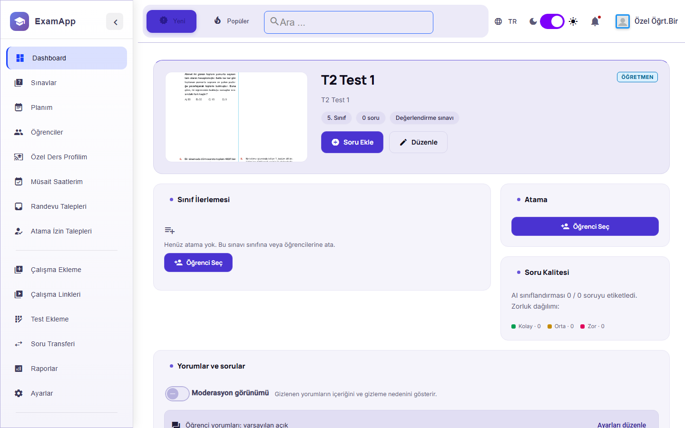
Kendi testinizde Yorumlar ve sorular bölümü ve Moderasyon görünümü anahtarı (bağımsız öğretmen hesabıyla alınmıştır).
Adım adım
Test detayını açıp sayfanın altındaki Yorumlar ve sorular bölümüne inin.
Yorumların varsayılan durumu üstteki özet satırında yazar (Öğrenci yorumları: varsayılan açık, 1 atamada kapalı …). Değiştirmek için Ayarları düzenle'ye basın.
Bir yoruma cevap vermek için Yanıtla'ya basın, metni yazıp Gönder'e (veya Ctrl+Enter) basın.
Uygunsuz bir yorumu yorum menüsünden Gizle ile gizleyin; Gizleme nedeni zorunludur. Gizlenen yorum herkese Bu yorum kaldırıldı. olarak görünür.
Gizlenen yorumların içeriğini ve nedenini görmek için Moderasyon görünümü anahtarını açın; gerekirse Gizlemeyi kaldır.
Başkasının testindeki bir yorumu Şikayet et ile (Spam ya da reklam, Hakaret…, Kişisel bilgi paylaşımı, Diğer) yöneticiye bildirebilirsiniz.
Alanlar ve butonlar
Alan / Buton
Açıklama
Moderasyon görünümü
Gizlenen yorumların içeriğini ve gizleme nedenini gösterir.
Yorum işlemleri. Öğretmen rozeti öğretmen yorumlarını işaretler.
Yorum kutusu
En fazla 2000 karakter; Göndermek için Ctrl+Enter.
Uyarı ve hata mesajları
Henüz yorum yok — konuşma boşken.
Worksheet varsayılanı: öğrenci yorum ve soruları kapalı. Atamaya özel ayar bunu değiştirebilir; mevcut yorumlar görünür. — yorumlar kapalıyken öğretmene.
Gizleme nedeni zorunlu., Yorum gizlendi., Yorum yeniden görünür., Yorum gizlenemedi.
Mesajında telefon numarası ya da e-posta var gibi görünüyor. Kişisel bilgilerini herkese açık yorumlarda paylaşmamanı öneririz. — kişisel veri uyarısı (Yine de gönder).
Bu konuşmaya cevap yazma yetkin yok., Bu yorumu yönetme yetkin yok. — yetki dışı işlem.
Çok hızlı işlem yapıyorsun. Lütfen biraz bekleyip tekrar dene., Sunucuya ulaşılamadı. Bağlantını kontrol edip tekrar dene., Yorumlar yüklenemedi.
Amacı: Onaylanmış bir ders randevusunda öğrenciyle görüntülü görüşme (Jitsi) yapmanızı ve Tahta sekmesinde ortak çizim tahtasını kullanmanızı sağlar. Öğretmen odada Moderatör (öğretmen), öğrenci Katılımcı rolündedir.
Ekran görüntüsü alınamadı
Not: Yerel ortamda katılım penceresi açık (ders saatine yakın) onaylı bir randevu olmadığı için aktif görüşme odası ve tahta görüntülenemedi. Öğrenci tarafındaki pencere kapandı durumu öğrenci bölümünde gösterilmiştir.
Adım adım
Randevu Talepleri ekranında onaylı randevunun yanındaki Derse katıl'a basın. Buton ders başlamadan kısa süre önce etkinleşir.
Oda hazırlanırken Görüşme odası hazırlanıyor... görünür; ardından Video sekmesinde görüşme başlar.
Tahta sekmesine geçerek ortak tahtaya çizin; bağlantı durumu (Bağlı, Yeniden bağlanıyor...) ve karşı tarafın çevrimiçi olup olmadığı (Öğrenci çevrimiçi) gösterilir.
Dersi bitirmek için Dersten ayrıl'a basın.
Alanlar ve butonlar
Alan / Buton
Açıklama
Video / Tahta sekmeleri
Görüntülü görüşme ve ortak çizim tahtası.
Dersten ayrıl
Odadan çıkar, randevu ekranına döner.
Tekrar dene / Geri dön
Hata durumunda odayı yeniden açmayı dener / önceki ekrana döner.
Uyarı ve hata mesajları
Ders başlamadan {{minutes}} dk önce aktif olur, Ders süresi doldu — katılım penceresi dışında.
Öğretmeniniz geçici olarak müsait değil; bu ders şu anda başlatılamıyor. — öğretmen onayı askıdayken (öğrenci tarafı).
Tahta henüz açılmadı; ders saatine yakın tekrar deneyin., Ders süresi doldu; tahta salt okunur., Ders bitiyor: tahta yaklaşık {{minutes}} dakika içinde kapanacak.
Tahtada görsel desteklenmiyor., Tahtadaki öğe sınırına ulaşıldı., Bu çizim çok uzun olduğu için karşı tarafa gönderilemedi. Daha kısa çizgilerle devam edin.
Dış bağlantı açılsın mı? — tahtadaki bir bağlantıya tıklandığında (Bağlantıyı aç / Vazgeç).
4.11 Soru Transferi
Menü: Soru Transferi · Adres: /question-transfer
Amacı: Soruları bir paket (ZIP) olarak dışa aktarmak ve başka bir ortamdan alınmış paketi içe aktarmak için kullanılır. İşler arka planda çalışır; durumları İşler bölümünde izlenir.
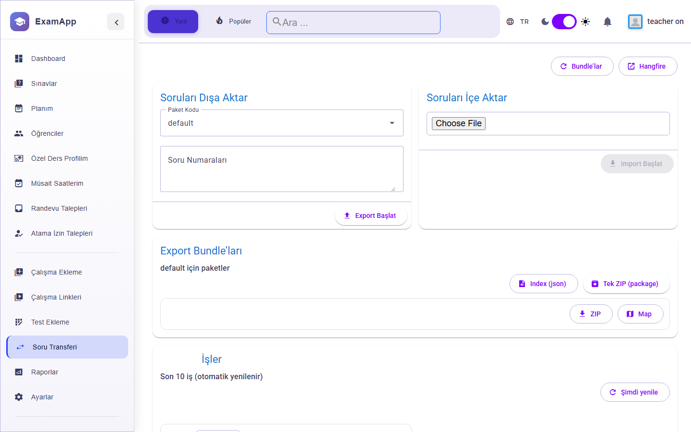
Soru Transferi ekranı.
Adım adım
Dışa aktarma:Paket Kodu'nu seçin, Soru Numaraları'na id veya aralık yazın (örn: 12, 15, 99, 100-200; boş bırakılırsa tüm sorular) ve Export Başlat'a basın.
Oluşan paketleri Export Bundle'ları bölümünden Index (json), Tek ZIP (package), ZIP veya Map olarak indirin.
İçe aktarma:Soruları İçe Aktar bölümünde ZIP dosyasını seçin; kaynak, soru sayısı ve zaten var olan soru sayısı çiplerini kontrol edip Import Başlat'a basın.
İşler bölümünde son 10 işi izleyin; liste otomatik yenilenir, Şimdi yenile ile elle yenileyin.
Alanlar ve butonlar
Alan / Buton
Açıklama
Bundle'lar
Bundle listesini yeniler.
Hangfire
Arka plan işlerinin yönetim panelini (Hangfire dashboard) açar.
Paket Kodu, Soru Numaraları
Dışa aktarılacak kaynak ve soru id'leri.
İşler (Export / Import sütunları)
İş durumu ve Index / ZIP / Dosya indirme bağlantıları.
Uyarı ve hata mesajları
Zip seçilmedi — içe aktarma dosyası seçilmeden.
Bu kaynak için henüz bundle yok. — paket listesi boşken.
Henüz iş yok., Export işi yok., Import işi yok.
4.12 Çalışma Ekleme (Çalışma Sayfaları)
Menü: Çalışma Ekleme · Adres: /study-pages
Amacı: Öğrencilerin çalışma programlarına eklenebilecek çalışma etkinliklerini (görsel sayfalar, linkler, kitap sayfa aralıkları) listeler, arar ve siler.
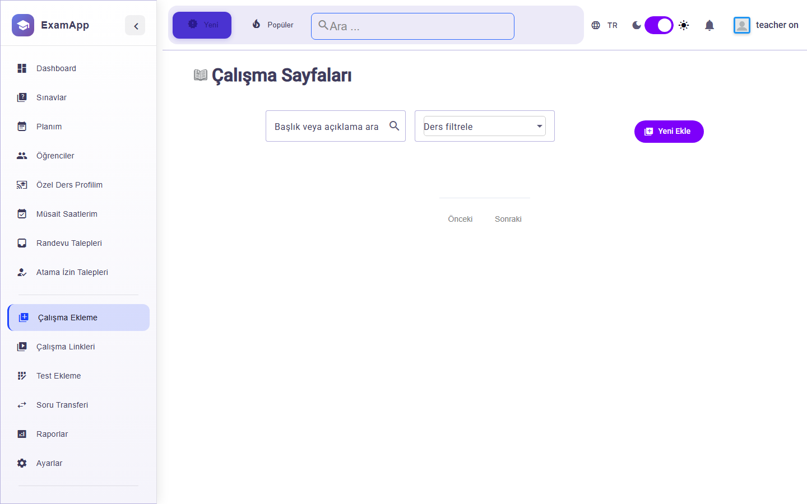
Çalışma Sayfaları listesi (test hesabında henüz kayıt yok).
Adım adım
Menüden Çalışma Ekleme'ye tıklayın.
Başlık veya açıklama ara kutusu ve Ders filtrele ile listeyi daraltın; Önceki / Sonraki ile sayfalar arasında gezinin.
Bir kartta Düzenle ile etkinliği açın, Sil ile silin.
Kapak, sayfa sayısı (N Sayfa) veya kitap aralığı, Yeni rozeti.
Yeni Ekle / Düzenle / Sil
Etkinlik oluşturma, düzenleme, silme.
Uyarı ve hata mesajları
Bu çalışma sayfasını silmek istediğinizden emin misiniz? Bu işlem geri alınmaz. — silme onayı (Evet, Sil / İptal).
Çalışma sayfası silindi. / Silme işleminde hata oluştu.
4.13 Yeni Çalışma Etkinliği
Menü: Çalışma Ekleme > Yeni Ekle · Adres: /study-pages/new (düzenleme: /study-pages/:id)
Amacı: Görsel (sayfa resimleri), Link veya Kitap Sayfası tipinde yeni bir çalışma etkinliği oluşturur ve sınıf/ders/konuya bağlar.
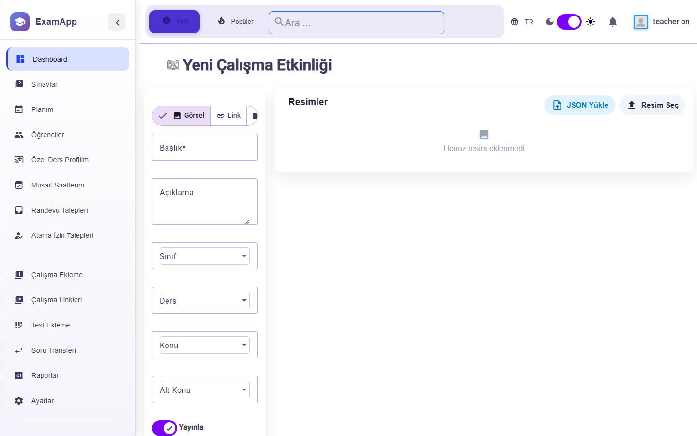
Yeni Çalışma Etkinliği formu.
Adım adım
Etkinlik Tipi'ni seçin: Görsel, Link veya Kitap Sayfası.
Başlık (zorunlu) ve Açıklama girin; Sınıf, Ders, Konu, Alt Konu'yu seçin.
Görsel tipinde sağdaki Resimler panelinden Resim Seç ile resim ekleyin veya JSON Yükle ile kitap/sayfa listesine göre resimleri getirin; Klasör Seç - Otomatik Filtrele ile klasörden eşleşenleri ekleyin.
Link tipinde URL ve Platform (EBA, YouTube, Diğer) girin.
Kitap Sayfası tipinde kitap, kitap testi ve Başlangıç/Bitiş Sayfası girin.
Yayınla anahtarını ayarlayın ve Kaydet'e basın.
Alanlar ve butonlar
Alan / Buton
Açıklama
Etkinlik Tipi
Görsel / Link / Kitap Sayfası.
Başlık*, Açıklama, Sınıf, Ders, Konu, Alt Konu
Etkinliğin adı ve sınıflandırması.
Resimler: JSON Yükle, Resim Seç, ZIP İndir
Görsel ekleme ve indirme. Dosya Kılavuzu JSON'daki dosyalardan bulunan/eksik olanları gösterir.
Yayınla
Açıkken etkinlik öğrencilere görünür.
Kaydet / İptal
Formu kaydeder / vazgeçer.
Uyarı ve hata mesajları
Lütfen gerekli alanları doldurun.
En az bir resim seçmelisiniz., Bu sayfada en az bir resim kalmalı. — görsel tipi.
Link tipi için URL zorunludur., Geçerli bir http/https URL giriniz. — link tipi.
Kitap seçin veya yeni kitap adı girin., Kitap testi seçin veya yeni test adı girin., Başlangıç ve bitiş sayfası zorunludur., Sayfa numaraları pozitif olmalıdır., Bitiş sayfası başlangıçtan küçük olamaz. — kitap tipi.
Çalışma etkinliği kaydedildi. / Kayıt sırasında hata oluştu.; Çalışma etkinliği güncellendi. / Güncelleme sırasında hata oluştu.
4.14 Çalışma Linkleri
Menü: Çalışma Linkleri · Adres: /study-links
Amacı: Konu veya alt konu için video/makale linkleri ekler. Öğrenciler yanlış cevapladıkları sorunun konusu için bu linkleri Bu soruyla ilgili çalışma önerileri olarak görür.
Çalışma Linkleri: önce ders, konu ve (isteğe bağlı) alt konu seçilir.
Adım adım
Ders, ardından Konu seçin. Alt konuya özel link için Alt konu seçin; Tümü (konu seviyesi linkler) konunun genel linklerini gösterir.
Link Ekle'ye basın; pencerede Başlık, URL, Kaynak tipi (YouTube / Diğer) girin ve Aktif (öğrencilere gösterilsin) seçeneğini ayarlayıp Kaydet'e basın.
Listedeki linkleri sürükleyerek veya Yukarı taşı/Aşağı taşı ile sıralayın; Aktif anahtarıyla aktif/pasif yapın; Düzenle/Sil ile değiştirin.
Alanlar ve butonlar
Alan / Buton
Açıklama
Ders / Konu / Alt konu
Linklerin bağlanacağı kapsam.
N / M aktif, Toplam N / M
Aktif link ve toplam link sınırları.
Link Ekle
Yeni link penceresi.
Aktif, Düzenle, Sil, sıralama
Link yönetimi; yalnızca kendi eklediğiniz linkleri değiştirebilirsiniz.
Uyarı ve hata mesajları
Konu veya alt konu seçin — kapsam seçilmeden.
Henüz çalışma linki yok — kapsamda link yokken.
Başlık zorunludur., URL zorunludur., Geçerli bir http:// veya https:// adresi girin.
Aktif link sınırına ulaşıldı ({{max}}/{{max}}). Yeni link eklemek veya bir linki aktifleştirmek için önce bir linki pasifleştirin., Bu kapsamda en fazla {{max}} link (aktif + pasif) olabilir. Yeni link eklemek için önce bir linki silin.
Yalnızca kendi eklediğiniz linkleri düzenleyebilir, aktif/pasif yapabilir veya silebilirsiniz.
Çalışma linki eklendi., Çalışma linki güncellendi., Çalışma linki silindi., Sıralama güncellendi., İşlem tamamlanamadı. Lütfen tekrar deneyin.
Çok fazla işlem yapıldı. Lütfen biraz sonra tekrar deneyin. — hız sınırı.
4.15 Planım (öğretmen takvimi)
Menü: Planım · Adres: /my-calendar
Amacı: Onayladığınız ders randevularını aylık takvimde gösterir.
Planım: aylık takvim görünümü.
Adım adım
Menüden Planım'a tıklayın.
Ok butonlarıyla önceki/sonraki aya geçin, Bugün ile bu aya dönün.
Bir güne tıklayarak o günün randevularını açın; pencerede Randevularıma git ile randevu ekranına geçin.
Alanlar ve butonlar
Alan / Buton
Açıklama
Önceki ay / Sonraki ay / Bugün
Ay gezinmesi.
Takvim çubukları
Ders randevusu etkinlikleri; bir günde çok etkinlik varsa +N daha.
Uyarı ve hata mesajları
Bu ay onaylanmış ders randevun yok — boş ay (Müsait saatlerimi düzenle bağlantısıyla).
Takvim yüklenemedi — hata (Tekrar dene).
4.16 Müsait Saatlerim
Menü: Müsait Saatlerim · Adres: /availability
Amacı: Öğrencilerin randevu talep edebileceği zaman aralıklarını haftalık takvimde tanımlar. Ayrıntılı kullanım (tekrarlayan aralıklar dahil) 5.3'te anlatılmıştır.
Müsait Saatlerim: haftalık takvim ızgarası.
Adım adım
Takvimde boş bir hücreye tıklayın; aralığı genişletmek için diğer hücrelere tıklayın.
Kaydet'e basın (her hafta tekrarlamak için Her hafta tekrarla, ardından Seriyi kaydet).
Bir aralığı silmek için üzerine tıklayıp Sil'i onaylayın.
Alanlar ve butonlar
Alan / Buton
Açıklama
Önceki hafta / Bugün / Sonraki hafta
Hafta gezinmesi.
Renk açıklaması
Boş, Bekleyen talep, Onaylı randevu, Tekrarlayan.
Randevu Talepleri
Randevu Talepleri ekranına gider.
Uyarı ve hata mesajları
Geçmiş bir saate aralık eklenemez., Seçim mevcut bir aralıkla çakışıyor., Bir aralık en fazla {{hours}} saat olabilir., En fazla {{days}} gün sonrasına aralık eklenebilir.
Randevusu olan aralık silinemez
Müsaitlik aralığı eklendi. / Aralık eklenemedi.; Müsaitlik aralığı silindi. / Aralık silinemedi.; Müsaitlik aralıkları yüklenemedi.
Amacı: Öğrencilerin müsait saatleriniz için gönderdiği ders randevusu taleplerini onaylar veya reddeder; onaylı derse buradan katılırsınız. Talep gelen bir hesapla ayrıntılı kullanım 5.4'te anlatılmıştır.
Randevu Talepleri (okula bağlı test öğretmeninde talep yok).
Adım adım
Bekleyenler veya Tümü filtresini seçin.
Bekleyen talepte Onayla ya da Reddet'e basın (reddederken isteğe bağlı gerekçe yazılır).
Onaylı randevuda ders saati yaklaşınca Derse katıl'a basın (4.10).
Menü: Atama İzin Talepleri · Adres: /assignment-permission-requests
Amacı: Paylaşımı Herkese Açık (Görüntüleme) olan testleriniz için diğer öğretmenlerin, testi kendi öğrencilerine atamak amacıyla gönderdiği izin taleplerini onaylar veya reddeder.
Bekleyen bir atama izni talebi (başka bir test öğretmen hesabıyla alınmıştır).
Adım adım
Menüden Atama İzin Talepleri'ne tıklayın; varsayılan filtre Bekleyenler'dir, geçmiş talepler için Tümü'nü seçin.
Talep eden öğretmeni, sınavı, tarihi ve notu inceleyin.
Onayla ile izni verin ya da Reddet ile reddedin.
Alanlar ve butonlar
Alan / Buton
Açıklama
Talep eden, Sınav, Tarih, Not
Talebin ayrıntıları.
Durum
Bekliyor, Onaylandı, Reddedildi.
Onayla / Reddet
Talep hakkında karar verir.
Uyarı ve hata mesajları
Bekleyen atama izni talebi yok — liste boşken.
Talep onaylandı., Talep reddedildi., İşlem tamamlanamadı., Talepler yüklenemedi.
4.19 Özel Ders Profilim (okula bağlı öğretmen)
Menü: Özel Ders Profilim · Adres: /tutor-profile
Amacı: Özel ders profili yalnızca bağımsız (okula bağlı olmayan) öğretmenler içindir. Okula bağlı öğretmen bu sayfada yalnızca bilgi mesajı görür. Bağımsız öğretmenin formu 5.2'de anlatılır.
Okula bağlı öğretmende Özel Ders Profilim.
Adım adım
Menüden Özel Ders Profilim'e tıklayın.
Mesajı okuyun. Özel ders vermek istiyorsanız bağımsız öğretmen olarak başvurmanız gerekir (yönetici onayı gerekir).
Alanlar ve butonlar
Alan / Buton
Açıklama
Bilgi mesajı
Form yerine bilgi kutusu gösterilir.
Uyarı ve hata mesajları
Tutor profili yalnızca bağımsız öğretmenler için kullanılabilir. — ekranda görünen metin.
Bu özellik bağımsız (okula bağlı olmayan) öğretmenler içindir. — arayüz sözlüğündeki karşılığı.
Ekranda görünen metin arayüz sözlüğündeki Bu özellik bağımsız (okula bağlı olmayan) öğretmenler içindir. metniyle aynı değildir ("Tutor" kelimesi Türkçeleştirilmemiş).
4.20 Raporlar
Menü: Raporlar · Adres: /certificates
Amacı:Başarı Rozetleri sayfasını açar: Çalışma alışkanlıklarınıza göre rozetlerin durumunu takip edin.
Raporlar: yerel ortamda yalnızca başlık görünüyor.
Adım adım
Menüden Raporlar'a tıklayın.
Rozet yolları ve tekil rozetler yüklendiğinde başlığın altında listelenir.
Alanlar ve butonlar
Alan / Buton
Açıklama
Başarı Rozetleri
Rozet yolları (N / M tamamlandı) ve Tekil Rozetler.
Uyarı ve hata mesajları
Rozetler yükleniyor..., Rozet bilgisi yüklenemedi. Lütfen daha sonra tekrar deneyin., Henüz kazanılmış veya takip edilen bir rozet yok.
Yerel ortamda sayfa yalnızca başlığı gösterdi; ne rozet listesi ne boş/hata mesajı görüntülendi. Öğretmen için rozet anlamlı değilse menü öğesinin öğretmene gösterilmemesi değerlendirilmeli.
4.21 Ayarlar, Öğrenciler, Yardım ve Geri Bildirim
Menü: Ayarlar · Öğrenciler · Yardım · Geri Bildirim · Adres: /student-profile, /students, /help, /feedback
Amacı: Ayarlar menüsü öğrenci profil sayfasını (/student-profile) açar. Öğrenciler, Yardım ve Geri Bildirim menü öğeleri henüz bir ekrana bağlı değildir.
Ekran görüntüsü alınamadı
Not: Yerel ortamda öğretmen hesabıyla Ayarlar (/student-profile) boş beyaz sayfa olarak açıldı. Öğrenciler, Yardım ve Geri Bildirim menüleri karşılığı olmayan adreslere gittiği için kullanıcıyı karşılama sayfasına (/welcome) atıyor.
Adım adım
Dil ve tema için sağ üstteki dil ve koyu/açık tema düğmelerini, profil işlemleri için profil menüsünü kullanın (Ortak bölüm).
Öğrencilerinizin durumunu görmek için Dashboard'daki Geride Kalan Öğrenciler ve test detayındaki Sınıf İlerlemesi bölümlerini kullanın.
Alanlar ve butonlar
Alan / Buton
Açıklama
Ayarlar
Öğrenci profil sayfası; öğretmende içerik göstermiyor.
Öğrenciler, Yardım, Geri Bildirim
Rotası tanımlı değil; karşılama sayfasına gider.
Uyarı ve hata mesajları
Ekranda mesaj gösterilmez; sayfa boş kalır veya karşılama sayfası açılır.
Bilinen sorun (ayrı issue adayı): öğretmen ve admin için Ayarlar boş sayfa; /students, /help, /feedback rotaları yok.
5. Bağımsız (özel ders) öğretmen
Bağımsız öğretmen ayrı bir rol değildir: Keycloak'ta yine Teacher rolündedir, öğretmen kaydında Bağımsız özel ders veriyorum seçeneğini işaretlemiş (sistemde bağımsız özel ders öğretmeni olarak işaretli) ve okula bağlı olmayan öğretmendir. Kayıt sırasında şu uyarı görünür: Bağımsız öğretmen hesapları yönetici onayından sonra etkinleşir. Yönetici panelindeki öğretmen listesinde bu hesapların okul sütununda Bağımsız yazar.
Menüsü öğretmen menüsüyle aynıdır; test, soru, çalışma içerikleri ve atama ekranları 4. bölümde anlatıldığı gibi çalışır. Farklar:
Özel Ders Profilim formu yalnızca bağımsız öğretmende açılır; onaylı profiller öğrencilerin Özel Ders Öğretmeni Ara sonuçlarında görünür.
Öğrenciler bu öğretmenin Müsait Saatlerim ekranında açtığı aralıklar için randevu talep eder; talepler Randevu Talepleri'nde onaylanır.
Atama yaparken sınıf bazlı atama yoktur; yalnızca onaylı randevusu olan öğrencilere test atanabilir (4.5).
Okul seçenekli paylaşım (Sadece okulum) kullanılamaz.
Bu bölümün ekran görüntüleri onaylı bir bağımsız öğretmen test hesabıyla alınmıştır.
5.1 Başvuru ve onay
Menü: Başvuru durumu · Adres: /register?role=teacher, /teacher-approval-pending
Amacı: Bağımsız öğretmen olarak kaydolmak ve yönetici onayını beklemek.
Öğretmen kayıt formu: Bağımsız özel ders veriyorum seçeneği.
Adım adım
Kayıt sihirbazında rol olarak Öğretmen'i seçin (Ortak bölüm).
Çalışma şekliniz alanında Bağımsız özel ders veriyorum'u işaretleyin ve Kaydı Tamamla'ya basın.
Hesabınız yönetici onayını bekler; bu sürede Başvuru durumu sayfası açılır. Onay beklerken Özel Ders Profilim'i doldurabilirsiniz.
Yönetici Öğretmen Başvuruları ekranında başvurunuzu onayladığında bildirim alırsınız ve tüm öğretmen menüsü açılır.
Alanlar ve butonlar
Alan / Buton
Açıklama
Bir okula bağlıyım / Bağımsız özel ders veriyorum
Çalışma şekli. Okula bağlı seçimde Okul alanı kullanılır (okul bağlantısı da yönetici onayı ister).
Okul
Yalnızca listeden seçilebilir; serbest metin kaydedilmez.
Kaydı Tamamla / Geri
Kaydı gönderir / rol seçimine döner.
Uyarı ve hata mesajları
Bağımsız öğretmen hesapları yönetici onayından sonra etkinleşir.
Öğretmen kaydınız alındı; hesabınız yönetici onayı bekliyor. — kayıt sonrası.
Yazdığınız okulu listeden seçin, alanı temizleyin ya da "Bağımsız özel ders veriyorum" seçeneğini işaretleyin. — okul alanına listede olmayan metin yazıldığında.
Öğretmen kaydı başarısız! Tekrar deneyin.
5.2 Özel Ders Profilim
Menü: Özel Ders Profilim · Adres: /tutor-profile
Amacı: Verdiğiniz dersleri, saatlik ücretinizi ve ders şeklinizi öğrencilerin görebileceği şekilde düzenler. Bu bilgiler öğrencinin öğretmen arama sonuçlarında ve öğretmen profil sayfasında görünür.
Özel Ders Profilim formu (Onaylı bağımsız öğretmen etiketi).
Adım adım
Menüden Özel Ders Profilim'e tıklayın.
Verdiğim dersler listesinden en az bir ders seçin; seçilenler çip olarak görünür, çipteki çarpı ile kaldırılır.
Saatlik ücret girin (yalnızca bilgi amaçlıdır, ödeme alınmaz).
Ders şekli altında Online ve/veya Yüz yüze'yi işaretleyin.
Kısa tanıtım alanına deneyiminizi yazın (en fazla 500 karakter).
Kaydet'e basın.
Alanlar ve butonlar
Alan / Buton
Açıklama
Durum etiketi
Onaylı bağımsız öğretmen, Onay bekliyor veya Başvurunuz reddedildi.
Verdiğim dersler*
En az bir ders seçilmelidir.
Saatlik ücret*
₺ cinsinden; öğrenci kartında N ₺ / saat olarak görünür.
Ders şekli: Online / Yüz yüze
En az biri seçilmelidir; ikisi birden seçilebilir.
Kısa tanıtım
Ders yönteminiz hakkında kısa metin (0 / 500 sayaç).
Kaydet
Zorunlu alanlar dolana kadar pasiftir.
Uyarı ve hata mesajları
Profiliniz onaylanana kadar öğrenci aramalarında görünmez. Bilgilerinizi şimdiden doldurabilirsiniz. — onay beklerken.
En az bir ders seçmelisiniz., En az birini seçmelisiniz; ikisi birden de seçilebilir. — eksik alan.
Özel ders profiliniz güncellendi. / Profil güncellenemedi. — kaydetme sonucu.
Özel ders profiliniz yüklenirken bir sorun oluştu., Ders listesi yüklenemedi.
5.3 Müsait Saatlerim
Menü: Müsait Saatlerim · Adres: /availability
Amacı: Öğrencilerin randevu talep edebilmesi için müsait olduğunuz zaman aralıklarını haftalık takvimde tanımlar. Tanımladığınız boş aralıklar öğrencinin Randevu Al penceresinde seçilebilir.
Müsait Saatlerim: haftalık takvim ve renk açıklaması.
Adım adım
Önceki/sonraki hafta oklarıyla ya da Bugün ile istediğiniz haftaya gidin.
Takvimde boş bir hücreye tıklayın; aralığı genişletmek için başka hücrelere tıklayın (gece yarısını aşmak için ertesi günün ilk hücrelerine tıklayın). Seçim Taslak olarak işaretlenir.
Tek seferlik aralık için Kaydet'e basın; vazgeçmek için Vazgeç.
Her hafta aynı saati açmak için Her hafta tekrarla'yı işaretleyin, isterseniz Şu tarihe kadar alanına bitiş günü girin (boş bırakılırsa süresiz tekrarlar) ve Seriyi kaydet'e basın.
Bir aralığı silmek için üzerine tıklayıp Bu aralığı sil? sorusunu Sil ile onaylayın. Tekrarlayan aralıkta Sadece bu hafta veya Tüm seri'yi seçin.
Alanlar ve butonlar
Alan / Buton
Açıklama
Randevu Talepleri
Gelen talepler ekranına gider.
Renk açıklaması
Boş, Bekleyen talep, Onaylı randevu, Tekrarlayan. Üzerine gelince öğrenci adı veya Geçmiş görünür.
Her hafta tekrarla, Şu tarihe kadar
Haftalık seri oluşturur; bitiş en fazla bir yıl ileride olabilir.
Kaydet / Seriyi kaydet / Vazgeç
Taslak aralığı kaydeder veya iptal eder.
Uyarı ve hata mesajları
Geçmiş bir saate aralık eklenemez., Seçim mevcut bir aralıkla çakışıyor., Bir aralık en fazla {{hours}} saat olabilir., En fazla {{days}} gün sonrasına aralık eklenebilir. — seçim kuralları.
Bitiş günü ilk tekrardan sonra ve en fazla bir yıl ileride olmalı. — tekrar bitişi hatalıysa.
Randevusu olan aralık silinemez
Müsaitlik aralığı eklendi., {{count}} hafta için aralık oluşturuldu., İlk {{count}} hafta oluşturuldu; seri süresiz devam eder., {{count}} hafta dolu olduğu için atlandı.
Müsaitlik aralığı silindi., {{count}} aralık silindi., {{count}} randevulu aralık korundu.
Aralık eklenemedi., Tekrarlayan aralık oluşturulamadı., Aralık silinemedi., Seri silinemedi., Müsaitlik aralıkları yüklenemedi.
Amacı: Öğrencilerin müsait saatleriniz için gönderdiği ders randevusu taleplerini onaylar veya reddeder; onaylı randevuda derse katılım buradan yapılır.
Randevu Talepleri, Tümü filtresi. Yerel ortamda bu hesabın talepleri listede görünmedi (bkz. not).
Bu zaman aralığı için zaten bir randevu var. — çakışan randevu.
Ders başlamadan {{minutes}} dk önce aktif olur, Ders süresi doldu — Derse katıl penceresi dışında.
Yerel ortamda bu hesabın veritabanında bir onaylı ve bir reddedilmiş randevusu olduğu halde Tümü filtresinde liste boş göründü. İki randevunun müsaitlik aralıkları silinmiş (silinmiş olarak işaretli) durumda; liste bu nedenle boş kalıyor olabilir (bkz. 5.6 notu).
5.5 Kendi testinde yorum moderasyonu
Menü: Sınavlar > test > Yorumlar ve sorular · Adres: /test/:id
Amacı: Kendi oluşturduğunuz testte öğrencilerin yorum ve sorularını yönetmek: cevaplamak, gizlemek, gizlenenleri görmek ve testin yorum ayarını değiştirmek. Kullanım okula bağlı öğretmenle aynıdır (4.9).
Kendi testinin detayı: Atama kartında yalnızca Öğrenci Seç var; altta Yorumlar ve sorular ve Moderasyon görünümü.
Adım adım
Sınavlar'dan kendi testinizi açın; bağımsız öğretmende Sınıfa Ata yoktur, Öğrenci Seç ile randevulu öğrencilere atama yapılır.
Sayfanın altındaki Yorumlar ve sorular bölümüne inin.
Moderasyon görünümü'nü açarak gizlenen yorumların içeriğini ve gizleme nedenini görün.
Bir yorumu yorum menüsünden Gizle ile gizleyin (neden zorunlu) veya Gizlemeyi kaldır ile geri açın.
Ayarları düzenle ile öğrenci yorumlarının varsayılan durumunu değiştirin.
Alanlar ve butonlar
Alan / Buton
Açıklama
Moderasyon görünümü
Gizlenen yorumların içeriğini ve gizleme nedenini gösterir.
Öğrenci yorumları: varsayılan açık/kapalı
Testin yorum ayarı özeti; atamaya özel ayarlar N atamada kapalı/açık olarak eklenir.
Gizle / Gizlemeyi kaldır / Yanıtla
Yorum işlemleri.
Uyarı ve hata mesajları
Yorum herkese "Bu yorum kaldırıldı" olarak görünür; içeriği ve nedeni yalnız moderatörler görür. Gizlemeyi sonra kaldırabilirsin. — gizleme penceresinde.
Gizleme nedeni zorunlu., Neden en fazla {{max}} karakter olabilir.
Yorum gizlendi., Yorum yeniden görünür., Yorum gizlenemedi.
Bu yorum kaldırıldığı için yeni cevap yazılamaz. — gizlenen yoruma cevap yazılmaya çalışıldığında.
Amacı: Onaylı randevuda öğrenciyle görüntülü ders yapmak ve Tahta sekmesinde ortak çizim tahtasını kullanmak. Öğretmen odada Moderatör (öğretmen) rolündedir. Ekranın kullanımı ve mesajları 4.10'da anlatılmıştır.
Ekran görüntüsü alınamadı
Not: Yerel ortamda katılım penceresi açık onaylı randevu yok. Bu hesabın onaylı randevusunun video adresi açıldığında Randevu bulunamadı. hatası alındı (aşağıdaki nota bakın).
Adım adım
Ders saatinden kısa süre önce Randevu Talepleri'nde onaylı randevunun Derse katıl butonuna basın.
Video sekmesinde görüşmeyi yürütün; Tahta sekmesinde öğrenciyle birlikte çizin.
Ders bitince Dersten ayrıl'a basın. Ders süresi dolduğunda tahta salt okunur olur.
Bu randevuya katılma yetkiniz yok., Görüşme yalnızca onaylanmış randevular için başlatılabilir. — sunucu mesajları.
Görüşmeye ders saatinden en erken {0} dakika önce katılabilirsiniz., Bu dersin görüşme penceresi kapandı (bitişten {0} dakika sonra kapanır). — katılım penceresi dışında ({0} yerine dakika yazılır).
Görüşme servisi şu anda yapılandırılmamış. Lütfen daha sonra tekrar deneyin.
Tahta henüz açılmadı; ders saatine yakın tekrar deneyin., Ders süresi doldu; tahta salt okunur., Randevu artık geçerli değil; tahta kapatıldı.
Bilinen sorun (ayrı issue adayı): yerel ortamda bu bağımsız öğretmen kendi onaylı randevusunun (#3) video sayfasını açtığında Randevu bulunamadı. hatası aldı. Randevunun bağlı olduğu müsaitlik aralığı veritabanında silinmiş olarak işaretli; video/tahta erişim sorgusu silinmiş aralığı filtrelediği için onaylı randevu bulunamıyor. Onaylı randevusu olan aralığın silinebilmesi veya sorgunun bu durumu ele almaması incelenmeli.
6. Veli
Veli rolü uygulamada yalnızca kayıt adımı olarak vardır. Kod incelemesine göre (kayıt sihirbazı, ParentService, API'deki UserRole.Parent ve /api/exam/parent/register uç noktası) veli hesabı oluşturulabilir, ancak kayıttan sonra veliye özel bir menü öğesi ya da ekran yoktur.
Kenar menüde veliye özel öğe bulunmaz. Veli yalnızca rol kısıtı olmayan öğeleri görür: Raporlar, Ayarlar, Yardım, Geri Bildirim.
/dashboard adresi veli için ayrı bir görünüm açmaz; öğretmen olmayan herkes gibi öğrenci ana sayfasına düşer.
Yerel ortamda veli rolüne sahip test hesabı yoktur (veli kaydı sayısı 0). Bu nedenle veli ekranlarının görüntüsü alınamamıştır.
Kayıt sihirbazı, 2. adım: veli. Bu adımda doldurulacak alan yoktur.
Adım adım
Giriş ekranındaki Kayıt ol bağlantısıyla hesap oluşturun ya da size verilen veli kayıt bağlantısını (?role=parent) açın.
Sihirbazın 1. adımında rol sorulursa Veli kartını seçin.
2. adımda Kaydı Tamamla düğmesine basın.
Alanlar ve butonlar
Alan / Buton
Açıklama
Geri
Rol seçimine döner.
Kaydı Tamamla
Veli kaydını oluşturur ve ana sayfaya (/dashboard) yönlendirir. İşlem sürerken metin Kaydediliyor… olur.
Uyarı ve hata mesajları
Hesabınızı veli olarak tamamlamak üzeresiniz. Çocuklarınızı daha sonra profilinizden ekleyebilirsiniz.: adımın açıklama metni.
Kayıt tamamlandı!: kayıt başarılı olduğunda.
Kayıt başarısız! Lütfen tekrar deneyin.: sunucu kaydı tamamlayamadığında.
Bilinen sorun: yerel ortamda bu adımda başlık (Veli Kaydı) ve açıklama metni ekranda görünmüyor (görüntüde kart boş). Ayrıca açıklamada söz edilen "çocuk ekleme" özelliği kodda yok: API'de veli için yalnızca register ve check-parent uç noktaları var, profil ekranında da çocuk ekleme alanı bulunmuyor.
6.2 Veli ana sayfası
Menü: Raporlar, Ayarlar, Yardım, Geri Bildirim · Adres: /dashboard
Amacı: Velinin giriş yaptıktan sonra gördüğü sayfa. Henüz veliye özel bir içerik yok.
Ekran görüntüsü alınamadı
Not: Yerel ortamda veli rolüne sahip hesap yok ve uygulamada veliye özel ekran bulunmuyor. Veli /dashboard adresinde öğrenci ana sayfasını görür.
Öğrenci takibi, çocuk ekleme, veli raporları gibi özellikler geliştirildiğinde bu bölüm güncellenecek.
7. Okul yöneticisi
Uygulamada ayrı bir okul yöneticisi rolü yoktur. Keycloak'ta tanımlı rol yalnız Admin, Teacher ve Student'tır (Parent rolü dev realm dosyasında var, yerel ortamda kullanıcısı yok). API'deki kullanıcı rolleri Student, Teacher ve Parent'tır. Kodda school-manager adıyla geçen bileşen (pages/admin/school-manager) bir rol değil, adminin okul listesini yönettiği ekrandır.
Okulla ilgili işlemleri platform yöneticisi (Admin) yapar:
İşlem
Nerede
Okul ekleme, düzenleme, silme
8.10 Okullar (/admin/schools ya da Yönetim sayfasının Okullar sekmesi)
Öğretmenin okul bağlantısı talebini onaylama / reddetme
Not: Okul yöneticisine özel menü ya da ekran bulunmadığı için ekran görüntüsü yok. Okul işlemleri için Admin bölümüne bakın.
8. Admin (platform yöneticisi)
Admin, Keycloak'ta Admin rolüne sahip hesaptır. Giriş yaptıktan sonra Yönetim Paneli (/admin/dashboard) açılır. Admin kullanıcıları, öğretmen onaylarını, okulları, ders taksonomisini, rozetleri ve yorum şikayetlerini yönetir.
Bilinen sorun: uygulamada /help ve /feedback rotası tanımlı olmadığından bu öğeler tanıtım sayfasına (/welcome) gider.
Yönetim sayfasındaki Okullar ve Öğretmen Başvuruları sekmeleri, menüdeki Okullar ve Öğretmen Başvuruları ekranlarıyla aynıdır; aynı işlemler iki yerden de yapılabilir.
8.1 Yönetim Paneli (Dashboard)
Menü: Dashboard · Adres: /admin/dashboard
Amacı: Platformun genel durumunu tek bakışta görmek: öğretmen, öğrenci, test ve soru sayıları, AI ile sınıflandırılmış soru oranı ve son bir yılın etkinlik trendleri.
Yönetim Paneli: sayaç kartları ve trendler.
Adım adım
Menüden Dashboard'u seçin.
Üstteki kartlardan sayıları okuyun. Öğretmen ve Öğrenci kartına tıklayınca ilgili liste açılır.
Trendler bölümünde bir günün üzerine gelerek o günün sayısını görün.
Alanlar ve butonlar
Alan / Buton
Açıklama
Öğretmen / Öğrenci / Test / Soru
Platformdaki toplam kayıt sayıları. Öğretmen ve Öğrenci kartları Öğretmenler ve Öğrenciler listesine götürür.
AI Sınıflandırılmış
Yapay zekâ ile konu/alt konu etiketi almış soru sayısı ve oranı (ör. 7 / 117).
Soru Oluşturma
Son 1 yılda günlük oluşturulan soru sayısı (ısı haritası).
Soru Çözme
Son 1 yılda günlük çözülen soru sayısı.
Öğrenci Login Trendi
Son günlerdeki öğrenci giriş sayıları.
Uyarı ve hata mesajları
Özet bilgileri alınırken bir sorun oluştu.: sayaçlar alınamadığında.
Platformda henüz veri yok. Öğretmen, öğrenci, test veya soru eklendiğinde sayaçlar burada güncellenecek.: hiç veri yokken.
Trend verileri alınırken bir sorun oluştu.: trendler alınamadığında.
Henüz yeterli veri yok: trend için veri azsa.
8.2 Yönetim: Taksonomi
Menü: Yönetim → Taksonomi sekmesi · Adres: /admin
Amacı: Sınıf → Ders → Konu → Alt Konu ağacını ve konulara bağlı çalışma linklerini yönetmek. Soru ekleme, test oluşturma ve AI sınıflandırma bu ağacı kullanır.
Taksonomi: 5. Sınıf seçili, dersler listeleniyor.
Adım adım
Menüden Yönetim'i açın; Taksonomi sekmesi seçili gelir.
Üstteki sınıf düğmelerinden birini seçin (ör. 5. Sınıf). Dersler sütunu o sınıfın derslerini gösterir.
Ders eklemek için Yeni ders alanına adı yazıp + düğmesine basın.
Bir derse tıklayın; Konular sütunu dolar. Aynı şekilde konu ekleyin, konu seçince Alt Konular sütunu dolar.
Kalem simgesiyle adı düzenleyin ve Kaydet ya da Vazgeç deyin; çöp kutusu simgesiyle silin (onay istenir).
Bir dersi başka sınıflara da bağlamak için ders satırındaki Sınıfları Yönet (kep simgesi) düğmesini kullanın, sınıfları işaretleyip Kaydet'e basın.
Konu ya da alt konu seçiliyken Çalışma Linkleri sütunundan o konunun linklerini yönetin.
Alanlar ve butonlar
Alan / Buton
Açıklama
Sınıf düğmeleri
Listelenecek sınıfı seçer.
Yeni ders / Yeni konu / Yeni alt konu + (Ders ekle, Konu ekle, Alt konu ekle)
Seçili sınıfa/derse/konuya yeni kayıt ekler.
Ders satırındaki etiketler
Dersin bağlı olduğu diğer sınıflar ve konu sayısı (N konu).
Sınıfları Yönet
Dersin bağlı olduğu sınıfları ekler/kaldırır. Pencerede N eklenecek, N kaldırılacak özeti görünür.
Dersi/Konuyu/Alt konuyu düzenle
Adı yerinde düzenler.
Dersi/Konuyu/Alt konuyu sil
Onaydan sonra siler.
Çalışma Linkleri
Seçili konu/alt konunun çalışma linkleri. Konu seçilmeden boş kalır.
Uyarı ve hata mesajları
Devam etmek için bir sınıf seç.: sınıf seçilmeden.
Bu sınıfa bağlı ders yok: seçili sınıfta ders yokken.
Önce bir ders seç / Önce bir konu seç: üst seviye seçilmeden.
"{{ad}}" dersini silmek istediğine emin misin? (konu ve alt konu için benzeri): silme onayı.
Bilinen sorun: yerel ortamda Dersler sütununda, ders adlarının üzerine bağlı sınıf etiketleri biniyor; ders adları okunmuyor (görüntüde görülüyor).
8.3 Yönetim: Sınıflandırma Cache
Menü: Yönetim → Sınıflandırma Cache sekmesi · Adres: /admin
Amacı: Soruların AI ile konu/alt konuya sınıflandırılmasında kullanılan Gemini önbelleğinin (cached content) durumunu görmek ve taksonomi değiştiğinde yenilemek.
Sınıflandırma Cache: durum ve yenileme düğmeleri.
Adım adım
Yönetim sayfasında Sınıflandırma Cache sekmesine geçin.
Durum kutusunu okuyun (Cache güncel. ya da güncel değil uyarısı).
Taksonomide ders/konu/alt konu değiştirdiyseniz Cache’i Yenile'ye basın ve onay penceresinde Yenile'yi seçin.
Bilgileri yeniden çekmek için Durumu yenile'yi kullanın.
Alanlar ve butonlar
Alan / Buton
Açıklama
Cached content, Model
Etkin önbelleğin kimliği ve kullanılan model.
Alt konu sayısı (son build)
Önbellek oluşturulurken taksonomideki alt konu sayısı.
Son yenileme
Önbelleğin son oluşturulma zamanı.
API anahtarı
yapılandırılmış ya da eksik (Gemini:ApiKey).
Durumu yenile
Yalnız durumu yeniden okur.
Cache’i Yenile
Güncel taksonomiden yeni önbellek oluşturup etkinleştirir.
Uyarı ve hata mesajları
Henüz cache oluşturulmamış.
Cache güncel değil — taksonomi değişmiş. Yenilemen önerilir.
Mevcut ders/konu/alt konu taksonomisinden yeni bir Gemini cached content oluşturulacak ve aktif hale gelecek. Devam edilsin mi?: yenileme onayı.
Cache durumu alınamadı, Yenileme başarısız: sunucu hatalarında.
8.4 Öğretmen Başvuruları
Menü: Öğretmen Başvuruları (ya da Yönetim → Öğretmen Başvuruları sekmesi) · Adres: /admin/teacher-approvals
Amacı: Öğretmen hesabı onaylarını, bağımsız (özel ders) öğretmen başvurularını ve öğretmenlerin okul bağlantısı taleplerini onaylamak ya da reddetmek. Hesabı onaylanmamış öğretmen öğretmen özelliklerini kullanamaz; okul bağlantısı onaylanana kadar öğretmen okulun öğrencilerini ve sınıflarını göremez.
Öğretmen Başvuruları, Tümü filtresi: geçmiş başvurular ve durumları.
Adım adım
Menüden Öğretmen Başvuruları'nı açın. Varsayılan filtre Onay bekleyenler'dir.
Satırdaki Başvuru Türü'ne bakın: Bağımsız, Okul: {okul adı} ya da Öğretmen hesabı. Hesap onayı da gerekiyorsa Hesap onayı etiketi görünür.
Gerekirse E-postayı göster ile maskelenmiş e-postanın tamamını görün.
Onayla'ya basarak başvuruyu onaylayın.
Reddetmek için Reddet'e basın, açılan pencerede Red nedeni'ni yazın ve Reddet ile gönderin.
Geçmiş kararları görmek için Tümü filtresine geçin; listeyi Yenile ile güncelleyin.
Alanlar ve butonlar
Alan / Buton
Açıklama
Onay bekleyenler / Tümü
Yalnız bekleyen başvuruları ya da tüm başvuruları listeler.
Ad Soyad, E-posta, Başvuru Tarihi
Başvuran öğretmen. E-posta maskeli gösterilir.
Başvuru Türü
Bağımsız / Okul / Öğretmen hesabı; hesap onayı gerekiyorsa + hesap onayı eklenir. Askıdaki hesaplarda Hesap askıda etiketi çıkar.
Durum, Karar Tarihi
Bekliyor, Onaylandı ya da Reddedildi (reddedilenlerde Gerekçe: …).
Onayla / Reddet
Kararı kaydeder. İşlem sürerken İşleniyor görünür. Karar verilmiş satırlarda İşlem yok yazar.
Red nedeni
Zorunlu; başvuru kaydına işlenir ve diğer yöneticilere görünür.
Uyarı ve hata mesajları
Bekleyen başvuru yok / Henüz başvuru yok: liste boşken.
Başvuru onaylandı. / Başvuru reddedildi.: işlem başarılı.
İşlem tamamlanamadı., Başvurular alınırken bir sorun oluştu.: sunucu hatası.
Red nedeni boş olamaz.: neden yazılmadan reddedilirse.
Gerekçe, geçmiş listesinde diğer yöneticilere görünür; kişisel veri (telefon, TC kimlik no, adres vb.) yazmayın.: red penceresindeki uyarı.
Bu başvuruyu onaylamak askıyı kaldırmaz. Askıyı kaldırmak için Öğretmenler listesini kullanın.: askıdaki hesaplarda.
Kısa sürede çok fazla istek yapıldı. Lütfen biraz bekleyip tekrar deneyin.: istek sınırı aşıldığında.
Bu listeyi görüntüleme yetkiniz yok.: yetkisiz erişimde.
8.5 Öğretmenler
Menü: Öğretmenler · Adres: /admin/teachers
Amacı: Platformdaki tüm öğretmenleri listelemek, okula göre filtrelemek ve hesap işlemlerini yapmak: şifre sıfırlama, okula bağlama/okul değiştirme, hesabı devre dışı bırakma/etkinleştirme, öğretmen onayını askıya alma/askıyı kaldırma.
Öğretmenler listesi. E-postalar maskeli gösterilir; sağdaki simgeler satır işlemleridir.
Adım adım
Menüden Öğretmenler'i açın.
Sağ üstteki Okul filtresinden bir okul, Tümü ya da Bağımsız / okulsuz seçin.
Satırdaki simgelerle işlem yapın (aşağıdaki tablo). Her işlem bir onay penceresi açar.
Sayfa altındaki sayfalama ile diğer kayıtlara geçin; Yenile ile listeyi güncelleyin.
Alanlar ve butonlar
Alan / Buton
Açıklama
Okul (filtre)
Tümü / belirli okul / Bağımsız / okulsuz.
Okul sütunu
Öğretmenin okulu; bağımsız öğretmenlerde Bağımsız.
Onay Durumu
Onaylı, Beklemede, Reddedildi; askıdaki hesapta Askıda etiketi (üzerine gelince tarih ve neden).
Hesap Durumu
Aktif, Pasif ya da Bilinmiyor (Keycloak hesabının durumu).
Öğretmeni bir okula bağlar ya da okulunu değiştirir. Pencerede Yeni okul seçilir; etkiler listelenir.
Devre dışı bırak / Etkinleştir
Hesabı kapatır (kullanıcı giriş yapamaz, oturumları kapanır) ya da yeniden açar.
Öğretmen onayını askıya al / Askıyı kaldır
Öğretmen özelliklerini kapatır ya da yeniden açar. Bkz. 8.7.
Uyarı ve hata mesajları
Öğretmen bulunamadı / Farklı bir okul filtresi deneyin.: filtre sonucu boşsa.
Öğretmen listesi alınırken bir sorun oluştu., Okul listesi alınamadı.: yükleme hatası.
Hesap onayı askıda olan öğretmenin okulu değiştirilemez. Önce askıyı kaldırın.
Hesabı henüz onaylanmamış öğretmen okula bağlanamaz. Önce başvuruyu onaylayın.
Onaylı bağımsız öğretmen bu ekrandan okula bağlanamaz.
Okul değişikliği etkileri: Öğretmen yeni okulun öğrencilerini ve sınıflarını okul kurallarına göre görebilecek., Eski okulun öğrencilerine ve sonuçlarına erişimi kalmayacak., Öğretmenin bekleyen bir okul talebi varsa kapatılır.
Başarı: {ad}, {okul} okuluna bağlandı. / {ad} öğretmeninin okulu {okul} olarak değiştirildi. / {ad} zaten bu okulda; değişiklik yapılmadı.
Okul değişti ancak oturum önbelleği temizlenemedi; değişiklik 1 saate kadar gecikebilir.
Öğretmenin okulu bu arada değiştirildi. Listeyi yenileyip tekrar deneyin.: aynı anda başka değişiklik olduysa.
Devre dışı bırakma onayı: Hesap devre dışı bırakılsın mı?, Kullanıcının açık olan tüm oturumları kapatılacak., Hesap tekrar etkinleştirilene kadar kullanıcı giriş yapamayacak.
Etkinleştirme onayı: Hesap etkinleştirilsin mi?, Kullanıcı mevcut şifresiyle tekrar giriş yapabilecek.
Kimlik sunucusuna ulaşılamadı. Lütfen daha sonra tekrar deneyin., Kısa sürede çok fazla liste isteği yapıldı. Lütfen biraz bekleyip tekrar deneyin.
8.6 Şifre sıfırlama
Menü: Öğretmenler ya da Öğrenciler → satırdaki kilit simgesi · Adres: /admin/teachers, /admin/students
Amacı: Şifresini unutan ve kendi başına sıfırlayamayan bir kullanıcıya geçici şifre üretmek.
Şifre sıfırlama onay penceresi (bir seed öğretmen için).
Adım adım
Öğretmen ya da öğrenci listesinde kullanıcının satırındaki Şifreyi sıfırla simgesine basın.
Penceredeki etkileri okuyun ve Şifreyi sıfırla'ya basın.
Açılan Geçici şifre oluşturuldu penceresinde Kopyala ile şifreyi kopyalayın.
Şifreyi kullanıcıya güvenli bir kanaldan iletin ve Kopyaladım, kapat ile pencereyi kapatın.
Alanlar ve butonlar
Alan / Buton
Açıklama
Şifreyi sıfırla
Geçici şifreyi üretir. İşlem sürerken Sıfırlanıyor... yazar.
İptal
Hiçbir şey değiştirmeden kapatır.
Geçici şifre / Kopyala
Yalnız bir kez gösterilen şifre ve kopyalama düğmesi.
Kopyaladım, kapat
Pencereyi kapatır; şifre bir daha gösterilmez.
Uyarı ve hata mesajları
{ad} kullanıcısının şifresi geçici bir şifreyle değiştirilecek., Kullanıcının açık olan tüm oturumları kapatılacak., Kullanıcı ilk girişte şifresini değiştirmek zorunda kalacak.: onay metinleri.
Bu şifre bir daha gösterilmeyecek. Pencereyi kapatmadan önce kopyalayıp kullanıcıya güvenli bir kanaldan iletin.
Kopyalandı / Kopyalanamadı; şifreyi seçip elle kopyalayın.
Kullanıcı bulunamadı., Bu işlem için yetkiniz yok., Kimlik sunucusuna ulaşılamadı. Lütfen daha sonra tekrar deneyin.
Kısa sürede çok fazla şifre sıfırlama isteği yapıldı. Lütfen biraz bekleyip tekrar deneyin.
Şifre sıfırlanırken bir sorun oluştu. Lütfen tekrar deneyin.
8.7 Öğretmen onayını askıya alma
Menü: Öğretmenler → satırdaki askıya alma simgesi · Adres: /admin/teachers
Amacı: Bir öğretmenin öğretmen özelliklerini (sınav oluşturma, çalışma içerikleri, randevular, öğretmen paneli) geçici olarak kapatmak; örneğin bir şikâyet incelenirken. Hesap kapanmaz, kullanıcı giriş yapabilir.
Askıya alma penceresi; neden alanı zorunludur.
Adım adım
Öğretmenler listesinde ilgili satırdaki Öğretmen onayını askıya al simgesine basın.
Askıya alma nedeni alanına kısa bir neden yazın.
Askıya al'a basın. Satırda Askıda etiketi görünür.
Askıyı kaldırmak için aynı satırdaki Askıyı kaldır simgesine basıp onaylayın.
Alanlar ve butonlar
Alan / Buton
Açıklama
Askıya alma nedeni
Zorunlu, en fazla 500 karakter. Yalnız yöneticilere gösterilir; öğretmene iletilmez.
Askıya al
Onayı askıya alır.
Askıyı kaldır
Öğretmen özelliklerini yeniden açar.
İptal
Değişiklik yapmadan kapatır.
Uyarı ve hata mesajları
Öğretmen özellikleri (sınav oluşturma, çalışma içerikleri, randevular, öğretmen paneli) kapanır.
Hesap devre dışı kalmaz; kullanıcı giriş yapabilir ancak öğretmen özelliklerine erişemez.
Neden zorunludur. / Neden en fazla 500 karakter olabilir.
Askı kaldırılsın mı?, Öğretmen özellikleri yeniden kullanılabilir hale gelir.: askıyı kaldırma onayı.
Öğretmen bulunamadı., Sunucuya ulaşılamadı. Lütfen daha sonra tekrar deneyin., Öğretmen onayı güncellenirken bir sorun oluştu. Lütfen tekrar deneyin.
8.8 Öğrenciler
Menü: Öğrenciler · Adres: /admin/students
Amacı: Platformdaki tüm öğrencileri listelemek, okula göre filtrelemek; şifre sıfırlamak, okul değiştirmek, hesabı devre dışı bırakmak ya da etkinleştirmek.
Öğrenciler listesi; öğrenci numarası ve e-posta maskeli gösterilir.
Adım adım
Menüden Öğrenciler'i açın.
Okul filtresinden okul, Tümü ya da Okulsuz seçin.
Satır simgeleriyle işlem yapın: Şifreyi sıfırla (8.6), Okulu değiştir (8.9), Devre dışı bırak / Etkinleştir.
Sayfa başına ve sayfa düğmeleriyle listede gezinin.
Alanlar ve butonlar
Alan / Buton
Açıklama
Ad Soyad
Altında maskeli öğrenci numarası (No: ****).
E-posta, Okul, Sınıf
Öğrencinin bilgileri.
Hesap Durumu
Aktif, Pasif, Bilinmiyor.
İşlemler
Şifreyi sıfırla, Okulu değiştir, Devre dışı bırak / Etkinleştir.
Yenile
Listeyi yeniden yükler.
Uyarı ve hata mesajları
Öğrenci bulunamadı / Farklı bir okul filtresi deneyin.
Öğrenci listesi alınırken bir sorun oluştu.
Kısa sürede çok fazla liste isteği yapıldı. Lütfen biraz bekleyip tekrar deneyin.
Bu listeyi görüntüleme yetkiniz yok.
Hesap durumu hataları: Kullanıcı bulunamadı., Kimlik sunucusuna ulaşılamadı. Lütfen daha sonra tekrar deneyin., Hesap durumu değiştirilirken bir sorun oluştu. Lütfen tekrar deneyin.
8.9 Öğrencinin okulunu değiştirme
Menü: Öğrenciler → satırdaki Okulu değiştir simgesi · Adres: /admin/students
Amacı: Öğrenciyi başka bir okula taşımak. Öğrenci kayıtta seçtiği okulu kendisi değiştiremez; bu işlem yalnız yöneticiye açıktır.
Okul değiştirme penceresi: mevcut okul, yeni okul seçimi ve etkiler.
Adım adım
Öğrenciler listesinde ilgili satırdaki Okulu değiştir simgesine basın.
Yeni okul alanına okul adı, ilçe ya da il yazıp listeden okulu seçin.
Bu değişikliğin etkileri bölümünü okuyun ve Okulu değiştir'e basın.
Alanlar ve butonlar
Alan / Buton
Açıklama
Mevcut okul
Öğrencinin şu anki okulu ya da Okulsuz.
Yeni okul
Zorunlu; listeden seçilir.
Okulu değiştir
Değişikliği kaydeder (Kaydediliyor...).
İptal / Listeyi yenile
Kapatır / çakışma olduğunda listeyi yeniler.
Uyarı ve hata mesajları
Öğrenci yeni okulun sınıf ve sınav atamalarını görecek.
Eski okulun öğretmenleri bu öğrenciye ve sonuçlarına erişimi kaybedecek.
Öğrenci okulunu kendisi değiştiremez; sonraki değişiklikler de yalnızca yönetici tarafından yapılabilir.
Seçilen okul bulunamadı. Lütfen listeden başka bir okul seçin.
Öğrencinin okulu bu arada değiştirildi. Listeyi yenileyip tekrar deneyin.
Kimlik sunucusuna ulaşılamadı; okul değiştirilmedi. Lütfen daha sonra tekrar deneyin.
Bu öğrencinin okulunu değiştirme yetkiniz yok., Okul değiştirilirken bir sorun oluştu. Lütfen tekrar deneyin.
8.10 Okullar (Okul Yönetimi)
Menü: Okullar (ya da Yönetim → Okullar sekmesi) · Adres: /admin/schools
Amacı: Platformdaki okulları eklemek, düzenlemek ve silmek. Öğrenci/öğretmen kaydındaki okul listesi buradan gelir.
Okul Yönetimi: üstte ekleme satırı, altında filtre ve okul listesi.
Adım adım
Menüden Okullar'ı açın.
Okul eklemek için Yeni okul adı'nı yazın; isterseniz il, ilçe ve açık adres seçip + (Okul ekle) düğmesine basın.
Listede aramak için Okul adında ara alanını, il ve ilçe filtrelerini kullanın; Filtreleri temizle ile sıfırlayın.
Bir rozeti değiştirmek için kalem (Düzenle) simgesine basın.
Rozeti vermeyi durdurmak için Devre dışı bırak simgesine basıp onaylayın; geri açmak için Aktifleştir'i kullanın.
Alanlar ve butonlar
Alan / Buton
Açıklama
Aktif / Tümü
Durum filtresi.
Ad, Kod, Kategori
Rozet adı (altında rozet yolu ve sırası), değiştirilemeyen kod, kategori.
Kural
Kazanma koşulu (ör. 21 gün aktif ol, Toplam 1500 dakika çalış).
Durum, Son değişiklik
Aktif / Devre dışı; son değişiklik tarihi ve yapan.
Yenile, Yeni rozet, Düzenle, Aktifleştir, Devre dışı bırak
Liste ve satır işlemleri.
Uyarı ve hata mesajları
Rozet tanımı bulunamadı / Devre dışı rozetleri görmek için "Tümü" filtresini seç.
"{ad}" öğrencilere artık verilmeyecek; kazanılmış rozetler kalır.: devre dışı bırakma onayı.
"{ad}" aktifleştirildi. / "{ad}" devre dışı bırakıldı.
Aktif rozet sayısı üst sınıra ulaştı. Önce başka bir rozeti devre dışı bırakın.
Rozet tanımları yüklenemedi., Rozet bulunamadı; liste yenileniyor., İşlem başarısız. Lütfen tekrar deneyin.
8.12 Yeni rozet / Rozeti düzenle
Menü: Rozetler → Yeni rozet (ya da Düzenle) · Adres: /admin/badge-definitions
Amacı: Yeni bir rozet tanımlamak ya da mevcut rozetin bilgilerini ve kazanma kuralını değiştirmek.
Yeni rozet penceresi: Rozet bilgileri, Rozet yolu (opsiyonel), Kazanma kuralı.
Adım adım
Rozet bilgileri: Kod, Ad, isterseniz Açıklama, Kategori ve İkon yolu girin.
Rozet bir dizinin parçasıysa Rozet yolu bölümünde Yol anahtarı, Yol adı ve Sıra girin.
Kazanma kuralı: Kural tipi'ni seçin, Hedef sayısını yazın; ders bazlı kurallarda Ders seçin.
Kaydet'e basın.
Alanlar ve butonlar
Alan / Buton
Açıklama
Kod*
Küçük harf, rakam ve tire; ör. subject-matematik-mastery. Sonradan değiştirilemez.
Ad*, Açıklama
Öğrencinin göreceği ad ve açıklama (en fazla 500 karakter).
Kategori*
Listeden seçilir ya da yeni kategori yazılır.
İkon yolu
achievements/<dosya>.svg biçiminde; boş bırakılabilir. Yanındaki düğme ikonu önizler.
Yol anahtarı, Yol adı, Sıra
Aynı yol anahtarına sahip rozetler öğrenci ekranında sırayla bir yol olarak gösterilir.
Kural tipi
Çözülen soru sayısı, Doğru cevap serisi, Toplam çalışma süresi, Toplam doğru cevap, Aktif gün sayısı, Günlük seri, Derste çözülen soru, Derste doğru cevap, Derste çalışma süresi.
Hedef, Ders
Kuralın eşik değeri; ders bazlı kurallarda ders zorunludur.
Kaydet / Vazgeç
Kaydeder / kapatır.
Uyarı ve hata mesajları
Bu alan zorunludur., Tam sayı olmalıdır., En az {min} olmalıdır., En fazla {max} olmalıdır.
Yalnız küçük harf, rakam ve tek tire (ör. question-hunter-1).: kod biçimi hatalıysa.
achievements/<dosya>.svg biçiminde olmalıdır.: ikon yolu hatalıysa.
Ders seçimi zorunludur.
Bu koda sahip bir rozet zaten var.
"{ad}" oluşturuldu. / "{ad}" güncellendi.
Kural tipleri yüklenemedi., Dersler yüklenemedi., Kaydedilemedi. Lütfen tekrar deneyin.
Rozet bulunamadı; başka bir yönetici tarafından değiştirilmiş olabilir.
Amacı: Tüm testlerde kullanıcıların şikayet ettiği yorumları tek listede görmek ve gerekirse gizlemek. Gizlenen yorum herkese "kaldırıldı" olarak görünür; içerik ve neden yalnız moderatörlere açıktır.
Yorum şikayetleri: her kartta test adı, yorum, şikayet nedenleri ve notlar.
Adım adım
Menüden Yorum Şikayetleri'ni açın.
Kartta yorumun hangi teste ait olduğunu, şikayet sayısını, nedenleri ve şikayetçinin notlarını okuyun.
Yorumu bağlamında görmek için Yoruma git'e basın (ilgili test sayfası açılır ve yorum gösterilir).
Gizlemek için Gizle'ye basın, Gizleme nedeni'ni yazıp Gizle ile onaylayın.
Gizlenmiş bir yorumu geri açmak için Gizlemeyi kaldır'a basın.
Alanlar ve butonlar
Alan / Buton
Açıklama
Test adı, Test yorumu / Soru N
Yorumun yeri: testin geneli ya da belirli bir soru.
Şikayet etiketi
1 şikayet ya da N şikayet.
Nedenler, Notlar
Şikayet nedenleri (sayılarıyla) ve şikayet edenlerin notları.
Son şikayet
Son şikayetin tarihi.
Gizli etiketi, Gizleme nedeni
Gizlenmiş yorumlarda görünür.
Yoruma git, Gizle, Gizlemeyi kaldır, Yenile
Kart ve liste işlemleri.
Uyarı ve hata mesajları
Şikayet edilmiş yorum yok.: liste boşken.
Şikayetler yükleniyor… / Şikayetler yüklenemedi.
Yorum herkese "Bu yorum kaldırıldı" olarak görünür; içeriği ve nedeni yalnız moderatörler görür. Gizlemeyi sonra kaldırabilirsin.: gizleme penceresi.
Gizleme nedeni zorunlu. / Neden en fazla 500 karakter olabilir.
Amacı: Bu iki öğe tüm rollerin menüsünde bulunur. Raporlar başarı rozetlerini, Ayarlar profil ve tema ayarlarını gösterir (ayrıntı: Ortak bölüm ve Öğrenci bölümü). Admin için anlamlı bir içerikleri yoktur.
Ekran görüntüsü alınamadı
Not: Yerel ortamda admin hesabıyla Ayarlar (/student-profile) boş sayfa gösteriyor; Raporlar yalnız Başarı Rozetleri başlığını gösteriyor.
Bilinen sorun: admin (ve öğretmen) için Ayarlar sayfası boş açılıyor; adminin profil/tema ayarı yapabileceği bir ekran yok.
Ek: PDF üretme ve kılavuzu güncelleme
PDF olarak kaydetme
Kılavuz A4 baskıya göre biçimlenmiştir: her rol yeni sayfada başlar, ekran görüntüleri sayfa arasında bölünmez, içindekiler tablosu ilk sayfalardadır.
Tarayıcıdan:docs/user-guide/index.html dosyasını Chrome veya Edge'de açın, Ctrl+P ▸ Hedef: PDF olarak kaydet ▸ Kağıt: A4 ▸ Arka plan grafikleri işaretli ▸ Kaydet.
PDF repoya eklenmez; gerektiğinde yukarıdaki komutlardan biriyle üretilir.
Ekran görüntülerini yenileme
docs/user-guide/capture-screenshots.js script'i her rol için giriş yapıp ekranları 1440×900 boyutunda, açık temada docs/user-guide/img/ klasörüne çeker. Uygulama yerelde çalışırken:
npm i playwright && npx playwright install chromium
EXAMAPP_TEST_PASSWORD=<test hesaplarının şifresi> node docs/user-guide/capture-screenshots.js # tümü
EXAMAPP_TEST_PASSWORD=<...> node docs/user-guide/capture-screenshots.js ogrenci- # yalnız öğrenci ekranları
Şifre yalnızca ortam değişkeninden okunur. Kullanılacak hesaplar EXAMAPP_STUDENT, EXAMAPP_TEACHER, EXAMAPP_TEACHER2, EXAMAPP_TUTOR, EXAMAPP_ADMIN, EXAMAPP_NOROLE değişkenleriyle değiştirilebilir; adres EXAMAPP_BASE_URL ile (varsayılan http://localhost:5678). Not: Soru Çöz ekranının görüntüsü için script bir pratik oturumu başlatır.